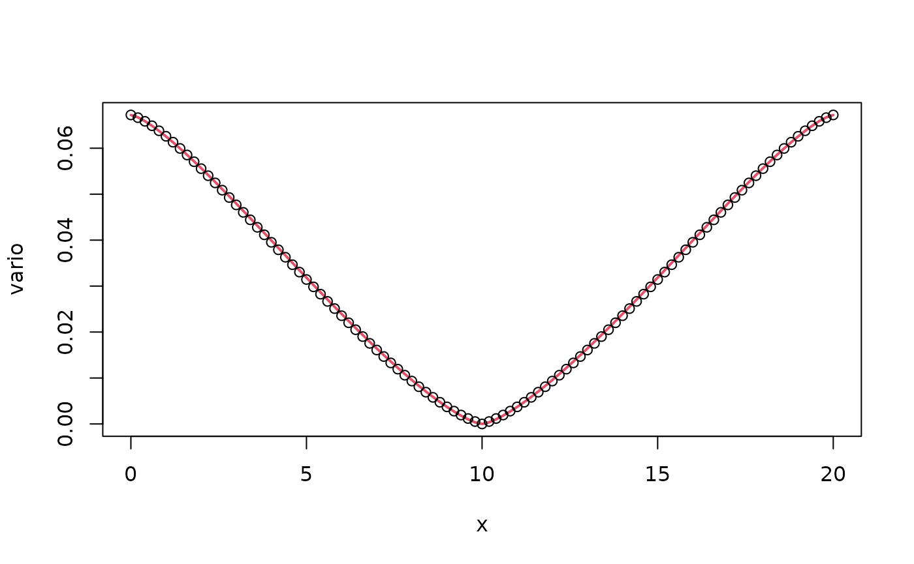
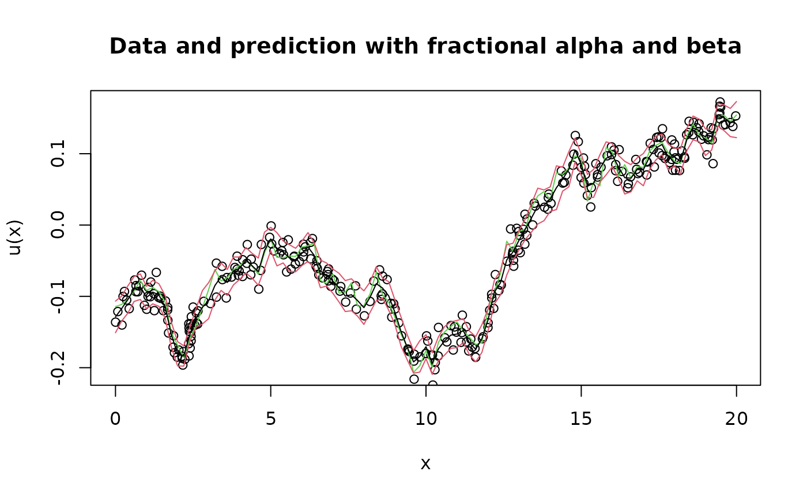

Intrinsic models in the rSPDE package
David Bolin
2026-05-07
Source:vignettes/intrinsic.Rmd
intrinsic.RmdIntroduction
In this vignette we provide a brief introduction to the intrinsic
models implemented in the rSPDE package.
A fractional intrinsic model
A basic intrinsic model which is implemented in rSPDE is
defined as
where
and
is the dimension of the spatial domain.
To illustrate these models, we begin by defining a mesh over :
library(fmesher)
bnd <- fm_segm(rbind(c(0, 0), c(2, 0), c(2, 2), c(0, 2)), is.bnd = TRUE)
mesh_2d <- fm_mesh_2d(
boundary = bnd,
cutoff = 0.02,
max.edge = c(0.1)
)
plot(mesh_2d, main = "")
We now use the intrinsic.operators() function to
construct the rSPDE representation of the general
model.
library(rSPDE)
tau <- 0.2
beta <- 1.8
fem <- fm_fem(mesh_2d)
op <- intrinsic.operators(tau = tau, beta = beta, mesh = mesh_2d, m = 2)To see that the rSPDE model is approximating the true
model, we can compare the variogram of the approximation (implemented in
the function variogram in the model object) with the true
variogram (implemented in variogram.intrinsic.spde()) as
follows.
point <- matrix(c(1,1),1,2)
Gamma <- op$variogram(point)
vario <- variogram.intrinsic.spde(point, mesh_2d$loc[,1:2], tau = tau,
beta = beta, L = 2, d = 2)
d = sqrt((mesh_2d$loc[,1]-point[1])^2 + (mesh_2d$loc[,2]-point[2])^2)
plot(d, Gamma, xlim = c(0,0.7), ylim = c(0,3),
ylab = "variogram(h)", xlab = "h")
points(d,vario,col=2)
If we want to increase the accuracy, we can either use a finer mesh
or increase the order of the rational approximation through the argument
m in intrinsic.operators. The default value of
m is 1. We can now use the simulate function
to simulate a realization of the field
:
u <- simulate(op,nsim = 1)
proj <- fm_evaluator(mesh_2d, dims = c(100, 100))
field <- fm_evaluate(proj, field = as.vector(u))
field.df <- data.frame(x1 = proj$lattice$loc[,1],
x2 = proj$lattice$loc[,2],
y = as.vector(field))
library(ggplot2)
library(viridis)
#> Loading required package: viridisLite
ggplot(field.df, aes(x = x1, y = x2, fill = y)) +
geom_raster() +
scale_fill_viridis()
By default, the field is simulated with a zero-integral constraint.
Fitting the model with R-INLA
Let us now consider a simple Gaussian linear model where the spatial field is observed at locations, under Gaussian measurement noise. For each we have where are iid normally distributed with mean 0 and standard deviation 0.1.
To generate a data set y from this model, we first draw
some observation locations at random in the domain and then use the
spde.make.A() functions (that wraps the functions
fm_basis(), fm_block() and
fm_row_kron() of the fmesher package) to
construct the observation matrix which can be used to evaluate the
simulated field
at the observation locations. After this we simply add the measurment
noise.
n_loc <- 1000
loc_2d_mesh <- matrix(2*runif(n_loc * 2), n_loc, 2)
A <- spde.make.A(
mesh = mesh_2d,
loc = loc_2d_mesh
)
sigma.e <- 0.1
y <- A %*% u + rnorm(n_loc) * sigma.eThe generated data can be seen in the following image.
df <- data.frame(x1 = as.double(loc_2d_mesh[, 1]),
x2 = as.double(loc_2d_mesh[, 2]), y = as.double(y))
ggplot(df, aes(x = x1, y = x2, col = y)) +
geom_point() +
scale_color_viridis()
We will now fit the model using our R-INLA implementation of
the rational SPDE approach. Further details on this implementation can
be found in R-INLA implementation of the
rational SPDE approach.
library(INLA)
#>
rspde.order <- 2
mesh.index <- rspde.make.index(name = "field", mesh = mesh_2d, rspde.order = rspde.order)
Abar <- rspde.make.A(mesh = mesh_2d, loc = loc_2d_mesh, rspde.order = rspde.order)
st.dat <- inla.stack(data = list(y = as.vector(y)), A = Abar, effects = mesh.index)We now create the model object.
rspde_model <- rspde.intrinsic(mesh = mesh_2d, rspde.order = rspde.order)Finally, we create the formula and fit the model to the data:
f <- y ~ -1 + f(field, model = rspde_model)
rspde_fit <- inla(f,
data = inla.stack.data(st.dat),
family = "gaussian",
control.predictor = list(A = inla.stack.A(st.dat)))To compare the estimated parameters to the true parameters, we can do the following:
result_fit <- rspde.result(rspde_fit, "field", rspde_model)
summary(result_fit)
#> mean sd 0.025quant 0.5quant 0.975quant mode
#> tau 0.124927 0.0283309 0.0771843 0.122364 0.187931 0.117380
#> nu 0.970031 0.0798057 0.8180830 0.968184 1.130710 0.962437
tau <- op$tau
nu <- op$beta - 1 #beta = nu + d/2
result_df <- data.frame(
parameter = c("tau", "nu", "sigma.e"),
true = c(tau, nu, sigma.e),
mean = c(result_fit$summary.tau$mean,result_fit$summary.nu$mean,
sqrt(1/rspde_fit$summary.hyperpar[1,1])),
mode = c(result_fit$summary.tau$mode, result_fit$summary.nu$mode,
sqrt(1/rspde_fit$summary.hyperpar[1,6]))
)
print(result_df)
#> parameter true mean mode
#> 1 tau 0.2 0.1249275 0.11738002
#> 2 nu 0.8 0.9700311 0.96243682
#> 3 sigma.e 0.1 0.0978050 0.09806979Extreme value models
When used for extreme value statistics, one might want to use a
particular form of the mean value of the latent field
,
which is zero at one location
and is given by the diagonal of
for the remaining locations. This option can be specified via the
mean.correction argument of
rspde.intrinsic:
rspde_model2 <- rspde.intrinsic(mesh = mesh_2d, rspde.order = rspde.order,
mean.correction = TRUE)We can then fit this model as before:
f <- y ~ -1 + f(field, model = rspde_model2)
rspde_fit <- inla(f,
data = inla.stack.data(st.dat),
family = "gaussian",
control.predictor = list(A = inla.stack.A(st.dat)))To see the posterior distributions of the parameters we can do:
result_fit <- rspde.result(rspde_fit, "field", rspde_model2)
posterior_df_fit <- gg_df(result_fit)
ggplot(posterior_df_fit) + geom_line(aes(x = x, y = y)) +
facet_wrap(~parameter, scales = "free") + labs(y = "Density")
An example with replicates
Let us redo the previous example with replicated data to illustrate
that replicates are handled in the same way as any other
rSPDE model. We start by generating some data with 200
observations per replicate
set.seed(1)
tau <- 0.2
beta <- 1.9
op <- intrinsic.operators(tau = tau, beta = beta, mesh = mesh_2d)
n.rep <- 5
m <- 1000
loc_2d_mesh <- matrix(2*runif(m * 2), m, 2)
A <- spde.make.A(
mesh = mesh_2d,
loc = loc_2d_mesh,
index = rep(1:m, times = n.rep),
repl = rep(1:n.rep, each = m)
)
u <- simulate(op, nsim = n.rep)
y <- as.vector(A %*% as.vector(u)) +
rnorm(m * n.rep) * 0.1We now create the stack, A matrix and index and fit the model:
Abar.rep <- rspde.make.A(
mesh = mesh_2d, loc = loc_2d_mesh, index = rep(1:m, times = n.rep),
repl = rep(1:n.rep, each = m)
)
mesh.index.rep <- rspde.make.index(
name = "field", mesh = mesh_2d,
n.repl = n.rep
)
st.dat.rep <- inla.stack(
data = list(y = y),
A = Abar.rep,
effects = mesh.index.rep
)
rspde_model.rep <- rspde.intrinsic(mesh = mesh_2d, prior.nu.dist = "beta")
f.rep <-
y ~ -1 + f(field,
model = rspde_model.rep,
replicate = field.repl
)
rspde_fit.rep <-
inla(f.rep,
data = inla.stack.data(st.dat.rep),
family = "gaussian",
control.predictor =
list(A = inla.stack.A(st.dat.rep))
)We then compare with the true parameter estimates as before
result_fit <- rspde.result(rspde_fit.rep, "field", rspde_model.rep)
summary(result_fit)
#> mean sd 0.025quant 0.5quant 0.975quant mode
#> tau 0.177470 0.0100279 0.157100 0.177863 0.196245 0.179665
#> nu 0.925429 0.0139859 0.900112 0.924575 0.954793 0.921720
tau <- op$tau
nu <- op$beta - 1 #beta = nu + d/2
result_df <- data.frame(
parameter = c("tau", "nu", "sigma.e"),
true = c(tau, nu, sigma.e),
mean = c(result_fit$summary.tau$mean,result_fit$summary.nu$mean,
sqrt(1/rspde_fit.rep$summary.hyperpar[1,1])),
mode = c(result_fit$summary.tau$mode, result_fit$summary.nu$mode,
sqrt(1/rspde_fit.rep$summary.hyperpar[1,6]))
)
print(result_df)
#> parameter true mean mode
#> 1 tau 0.2 0.17747002 0.17966545
#> 2 nu 0.9 0.92542934 0.92171990
#> 3 sigma.e 0.1 0.09991288 0.09990264To see the posterior distributions of the parameters we can do:
result_fit <- rspde.result(rspde_fit.rep, "field", rspde_model.rep)
posterior_df_fit <- gg_df(result_fit)
ggplot(posterior_df_fit) + geom_line(aes(x = x, y = y)) +
facet_wrap(~parameter, scales = "free") + labs(y = "Density")
A more general model
The rSPDE package also contains a partial implementation
of a more general intrinsic model, which we refer to as an intrinsic
Matérn model. The model is defined as
where
and
is the dimension of the spatial domain. These models are handled by
performing two rational approximations, one for each fractional
operator.
To illustrate this model, we consider the same mesh as before and use
the intrinsic.matern.operators() function to construct the
rSPDE representation of the general model.
bnd <- fm_segm(rbind(c(0, 0), c(2, 0), c(2, 2), c(0, 2)), is.bnd = TRUE)
mesh_2d <- fm_mesh_2d(
boundary = bnd,
cutoff = 0.01,
max.edge = c(0.05)
)
kappa <- 10
tau <- 0.0025
alpha <- 2
beta <- 1
op <- intrinsic.matern.operators(kappa = kappa, tau = tau, alpha = alpha,
beta = beta, mesh = mesh_2d)To see that the rSPDE model is approximating the true
model, we can compare the variogram of the approximation with the true
variogram (implemented in variogram.intrinsic.spde()) as
follows.
point <- matrix(c(1,1),1,2)
Gamma <- op$variogram(point)
vario <- variogram.intrinsic.spde(point, mesh_2d$loc[,1:2], kappa = kappa,
alpha = alpha, tau = tau,
beta = beta, L = 2, d = 2)
d = sqrt((mesh_2d$loc[,1]-point[1])^2 + (mesh_2d$loc[,2]-point[2])^2)
plot(d, Gamma, xlim = c(0,0.5), ylim = c(0,4),
ylab = "variogram(h)", xlab = "h")
lines(sort(d),sort(vario),col=2, lwd = 2)
We can now use the simulate function to simulate a
realization of the field
:
u <- simulate(op,nsim = 1, use_kl = FALSE)
proj <- fm_evaluator(mesh_2d, dims = c(100, 100))
field <- fm_evaluate(proj, field = as.vector(u))
field.df <- data.frame(x1 = proj$lattice$loc[,1],
x2 = proj$lattice$loc[,2],
y = as.vector(field))
library(ggplot2)
library(viridis)
ggplot(field.df, aes(x = x1, y = x2, fill = y)) +
geom_raster() +
scale_fill_viridis()
By default, the field is simulated with a zero-integral constraint.
Fitting the model with R-INLA
We will now fit the model using our R-INLA implementation of
the rational SPDE approach. Further details on this implementation can
be found in R-INLA implementation of the
rational SPDE approach.
We begin by simulating some data as before.
n_loc <- 2000
loc_2d_mesh <- matrix(2*runif(n_loc * 2), n_loc, 2)
A <- spde.make.A(
mesh = mesh_2d,
loc = loc_2d_mesh
)
sigma.e <- 0.1
y <- A %*% u + rnorm(n_loc) * sigma.eThe generated data can be seen in the following image.
df <- data.frame(x1 = as.double(loc_2d_mesh[, 1]),
x2 = as.double(loc_2d_mesh[, 2]), y = as.double(y))
ggplot(df, aes(x = x1, y = x2, col = y)) +
geom_point() +
scale_color_viridis()
To fit the model, we create the
matrix, the index, and the inla.stack object. For now,
these more general models can only be estimated with
and
or
.
For these non-fractional models, we can use the standard INLA functions
to make the required elements.
mesh.index <- inla.spde.make.index(name = "field", n.spde = mesh_2d$n)
st.dat <- inla.stack(data = list(y = as.vector(y)), A = A, effects = mesh.index)We now create the model object.
rspde_model <- rspde.intrinsic.matern(mesh = mesh_2d, alpha = alpha)Finally, we create the formula and fit the model to the data:
f <- y ~ -1 + f(field, model = rspde_model)
rspde_fit <- inla(f,
data = inla.stack.data(st.dat),
family = "gaussian",
control.predictor = list(A = inla.stack.A(st.dat)))We can get a summary of the fit:
summary(rspde_fit)
#> Time used:
#> Pre = 0.143, Running = 20.2, Post = 0.0541, Total = 20.4
#> Random effects:
#> Name Model
#> field CGeneric
#>
#> Model hyperparameters:
#> mean sd 0.025quant 0.5quant
#> Precision for the Gaussian observations 100.68 4.490 92.10 100.59
#> Theta1 for field -5.98 0.048 -6.07 -5.98
#> Theta2 for field 2.35 0.086 2.17 2.35
#> 0.975quant mode
#> Precision for the Gaussian observations 109.78 100.44
#> Theta1 for field -5.88 -5.98
#> Theta2 for field 2.51 2.35
#>
#> Marginal log-Likelihood: 727.86
#> is computed
#> Posterior summaries for the linear predictor and the fitted values are computed
#> (Posterior marginals needs also 'control.compute=list(return.marginals.predictor=TRUE)')To get a summary of the fit of the random field only, we can do the following:
result_fit <- rspde.result(rspde_fit, "field", rspde_model)
summary(result_fit)
#> mean sd 0.025quant 0.5quant 0.975quant mode
#> tau 0.00253239 0.000121272 0.00230558 0.00252733 0.00278181 0.00251642
#> kappa 10.49120000 0.897538000 8.79938000 10.47040000 12.32030000 10.44920000
tau <- op$tau
result_df <- data.frame(
parameter = c("tau", "kappa"),
true = c(tau, kappa), mean = c(result_fit$summary.tau$mean,
result_fit$summary.kappa$mean),
mode = c(result_fit$summary.tau$mode, result_fit$summary.kappa$mode)
)
print(result_df)
#> parameter true mean mode
#> 1 tau 0.0025 0.00253239 0.002516418
#> 2 kappa 10.0000 10.49120034 10.449174175Kriging with R-INLA implementation
Let us now obtain predictions (i.e., do kriging) of the latent field on a dense grid in the region.
We begin by creating the grid of locations where we want to compute
the predictions. To this end, we can use the
rspde.mesh.projector() function. This function has the same
arguments as the function inla.mesh.projector() the only
difference being that the rSPDE version also has an argument
nu and an argument rspde.order. Thus, we
proceed in the same fashion as we would in R-INLA’s standard SPDE
implementation:
projgrid <- inla.mesh.projector(mesh_2d,
xlim = c(0, 2),
ylim = c(0, 2)
)
#> Warning: `inla.mesh.projector()` was deprecated in INLA 23.06.07.
#> ℹ Please use `fmesher::fm_evaluator()` instead.
#> ℹ For more information, see
#> https://inlabru-org.github.io/fmesher/articles/inla_conversion.html
#> ℹ To silence these deprecation messages in old legacy code, set
#> `inla.setOption(fmesher.evolution.warn = FALSE)`.
#> ℹ To ensure visibility of these messages in package tests, also set
#> `inla.setOption(fmesher.evolution.verbosity = 'warn')`.
#> This warning is displayed once per session.
#> Call `lifecycle::last_lifecycle_warnings()` to see where this warning was
#> generated.This lattice contains 100 × 100 locations (the default). Let us now calculate the predictions jointly with the estimation. To this end, first, we begin by linking the prediction coordinates to the mesh nodes through an matrix
A.prd <- projgrid$proj$AWe now make a stack for the prediction locations. We have no data at
the prediction locations, so we set y= NA. We then join
this stack with the estimation stack.
ef.prd <- list(c(mesh.index))
st.prd <- inla.stack(
data = list(y = NA),
A = list(A.prd), tag = "prd",
effects = ef.prd
)
st.all <- inla.stack(st.dat, st.prd)Doing the joint estimation takes a while, and we therefore turn off
the computation of certain things that we are not interested in, such as
the marginals for the random effect. We will also use a simplified
integration strategy (actually only using the posterior mode of the
hyper-parameters) through the command
control.inla = list(int.strategy = "eb"), i.e. empirical
Bayes:
rspde_fitprd <- inla(f,
family = "Gaussian",
data = inla.stack.data(st.all),
control.predictor = list(
A = inla.stack.A(st.all),
compute = TRUE, link = 1
),
control.compute = list(
return.marginals = FALSE,
return.marginals.predictor = FALSE
),
control.inla = list(int.strategy = "eb")
)We then extract the indices to the prediction nodes and then extract the mean and the standard deviation of the response:
id.prd <- inla.stack.index(st.all, "prd")$data
m.prd <- matrix(rspde_fitprd$summary.fitted.values$mean[id.prd], 100, 100)
sd.prd <- matrix(rspde_fitprd$summary.fitted.values$sd[id.prd], 100, 100)Finally, we plot the results. First the mean:
field.pred.df <- data.frame(x1 = projgrid$lattice$loc[,1],
x2 = projgrid$lattice$loc[,2],
y = as.vector(m.prd))
ggplot(field.pred.df, aes(x = x1, y = x2, fill = y)) +
geom_raster() + scale_fill_viridis()
Then, the marginal standard deviations:
field.pred.sd.df <- data.frame(x1 = proj$lattice$loc[,1],
x2 = proj$lattice$loc[,2],
sd = as.vector(sd.prd))
ggplot(field.pred.sd.df, aes(x = x1, y = x2, fill = sd)) +
geom_raster() + scale_fill_viridis()
Using intrinsic models without R-INLA
Currently, the more general model is only implemented in
R-INLA using fixed integer values of the smoothness
parameters. However, all intrinsic models are implemented in
rSPDE in full generality. In this section, we illustrate
the rSPDE interface. Let us test a model in one
dimension.
Let us start with generating the model
L = 20
x <- seq(from = 0, to = L, length.out = 101)
mesh <- fm_mesh_1d(x)
beta <- 1.1
alpha <- 0
kappa <- 10
tau <- 10
op <- intrinsic.matern.operators(kappa = kappa, tau = tau, alpha = alpha,
beta = beta, mesh = mesh, d = 1)
vario <- variogram.intrinsic.spde(c(L/2), mesh$loc, tau = tau,
beta = beta, alpha = alpha, kappa = kappa, L = L, d = 1)
plot(x, vario, type = "l", col = 2, lwd = 2)
points(x,op$variogram(L/2),col=1)
We now generate some data. The option to use a mean value correction for extremes models is also implemented, so we generate some data using this.
n.rep <- 100
u <- simulate(op,nsim = n.rep, integral.constraint = FALSE, use_kl = TRUE)
drift <- op$mean_correction()
u <- u + matrix(rep(drift, times = n.rep), nrow = op$n, ncol= n.rep)
sigma.e <- 0.01
n.obs <- 300
obs.loc <- runif(n = n.obs, min = 0, max = L)
A <- rSPDE.A1d(x, obs.loc)
Y <- as.matrix(A %*% u + sigma.e * matrix(rnorm(n.obs*n.rep),n.obs,n.rep))Let us now show how to do kriging prediction for this model.
A <- make_A(op, loc = obs.loc)
A.krig <- make_A(op, loc = x)
u.krig <- predict(op,
A = A, Aprd = A.krig, Y = Y[,1], sigma.e = sigma.e,
compute.variances = TRUE
)
plot(obs.loc, Y[,1],
ylab = "u(x)", xlab = "x", main = "Data and prediction",
ylim = c(
min(c(min(u.krig$mean - 2 * sqrt(u.krig$variance)),min(u[,1]))),
max(c(max(u.krig$mean + 2 * sqrt(u.krig$variance)), max(u[,1])))
)
)
lines(x,u[,1],col=3)
lines(x, u.krig$mean)
lines(x, u.krig$mean + 2 * sqrt(u.krig$variance), col = 2)
lines(x, u.krig$mean - 2 * sqrt(u.krig$variance), col = 2)
We now use rspde_lme to fit the parameters based on this
data. Since we generated data with alpha=0, we specify this
in the function to indicate that this parameter should not be fitted but
kept fixed at alpha=0 by setting fix_alpha=0
in model_options. We also specify
mean_correction=TRUE to indicate that we should use the
mean value correction when fitting.
data = data.frame(y = c(Y), loc = rep(obs.loc, n.rep), rep = rep(1:n.rep, each = n.obs))
fit <- rspde_lme(y ~ -1, loc = "loc", repl = "rep", data = data,
model = op, mean_correction = TRUE, parallel = TRUE,
model_options = list(fix_alpha = 0))
rbind(c(fit$coeff$random_effects[c("beta", "tau")], fit$coeff$measurement_error),
c(beta, tau, sigma.e))
#> beta tau std. dev
#> [1,] 1.089129 10.02531 0.009988161
#> [2,] 1.100000 10.00000 0.010000000An example with estimated alpha and beta parameters
In the previous example, we fixed the alpha parameter and only estimated beta. Now, let us demonstrate how to estimate both alpha and beta simultaneously. We will set up a new model with different parameter values:
L = 20
x <- seq(from = 0, to = L, length.out = 101)
mesh <- fm_mesh_1d(x)
beta <- 1.2
alpha <- 0.3
kappa <- 15
tau <- 7
op <- intrinsic.matern.operators(kappa = kappa, tau = tau, alpha = alpha,
beta = beta, mesh = mesh, d = 1)
vario <- variogram.intrinsic.spde(c(L/2), mesh$loc, tau = tau,
beta = beta, alpha = alpha, kappa = kappa, L = L, d = 1)
plot(x, vario, type = "l", col = 2, lwd = 2)
points(x, op$variogram(L/2), col = 1)
We can note here that the variogram of the approximate model is not
particularly close to the variogram of the true continuous model. The
reason for this is that the value of alpha is very small,
and we therefore need a larger order of the rational approximation than
the default value of 2. We can adjust the orders of the rational
approximations through the m_alpha and m_beta
values in intrinsic.matern.operators. Let us increase the
value of m_alpha and decrease the value of
m_beta.
op <- intrinsic.matern.operators(kappa = kappa, tau = tau, alpha = alpha,
beta = beta, mesh = mesh, d = 1, m_alpha = 6,
m_beta = 1)
vario <- variogram.intrinsic.spde(c(L/2), mesh$loc, tau = tau,
beta = beta, alpha = alpha, kappa = kappa, L = L, d = 1)
plot(x, vario, type = "l", col = 2, lwd = 2)
points(x, op$variogram(L/2), col = 1)
We now have a better approximation. Similar to the previous example, we will generate data with the mean value correction for extremes models:
n.rep <- 100
u <- simulate(op, nsim = n.rep, integral.constraint = FALSE, use_kl = TRUE)
drift <- op$mean_correction()
u <- u + matrix(rep(drift, times = n.rep), nrow = op$n, ncol = n.rep)
sigma.e <- 0.015
n.obs <- 300
obs.loc <- runif(n = n.obs, min = 0, max = L)
A <- rSPDE.A1d(x, obs.loc)
Y <- as.matrix(A %*% u + sigma.e * matrix(rnorm(n.obs*n.rep), n.obs, n.rep))Let’s visualize the data and predictions for this model:
A <- make_A(op, loc = obs.loc)
A.krig <- make_A(op, loc = x)
u.krig <- predict(op,
A = A, Aprd = A.krig, Y = Y[,1], sigma.e = sigma.e,
compute.variances = TRUE
)
plot(obs.loc, Y[,1],
ylab = "u(x)", xlab = "x", main = "Data and prediction with fractional alpha and beta",
ylim = c(
min(c(min(u.krig$mean - 2 * sqrt(u.krig$variance)), min(u[,1]))),
max(c(max(u.krig$mean + 2 * sqrt(u.krig$variance)), max(u[,1])))
)
)
lines(x, u[,1], col = 3)
lines(x, u.krig$mean)
lines(x, u.krig$mean + 2 * sqrt(u.krig$variance), col = 2)
lines(x, u.krig$mean - 2 * sqrt(u.krig$variance), col = 2)
Now, we will use rspde_lme to fit the parameters but
this time we will not fix alpha, allowing both alpha and beta to be
estimated. Unlike the previous example where we set
fix_alpha=0, we do not include this constraint:
data = data.frame(y = c(Y), loc = rep(obs.loc, n.rep), rep = rep(1:n.rep, each = n.obs))
op <- intrinsic.matern.operators(kappa = kappa, tau = tau, alpha = 1.3, beta = 1.05, mesh = mesh, d = 1, m_alpha = 3, m_beta = 1)
fit <- rspde_lme(y ~ -1, loc = "loc", repl = "rep", data = data,
model = op, mean_correction = TRUE, parallel = FALSE)
#> alpha = 1.3 , tau = 7 , beta = 1.05 , sigma_e = 0.01600249 , lik = -19908.86 nz = 8 , nz.p = 7
#> alpha = 1.3 , tau = 7.007004 , beta = 1.05 , sigma_e = 0.01600249 , lik = -20037.54 nz = 8 , nz.p = 7
#> alpha = 1.3 , tau = 6.993003 , beta = 1.05 , sigma_e = 0.01600249 , lik = -19780.33 nz = 8 , nz.p = 7
#> alpha = 1.3 , tau = 7 , beta = 1.05 , sigma_e = 0.01600249 , lik = -20075.76 nz = 8 , nz.p = 7
#> alpha = 1.3 , tau = 7 , beta = 1.05 , sigma_e = 0.01600249 , lik = -19742.22 nz = 8 , nz.p = 7
#> alpha = 1.301301 , tau = 7 , beta = 1.05 , sigma_e = 0.01600249 , lik = -20362.64 nz = 8 , nz.p = 7
#> alpha = 1.298701 , tau = 7 , beta = 1.05 , sigma_e = 0.01600249 , lik = -19457.5 nz = 8 , nz.p = 7
#> alpha = 1.3 , tau = 7 , beta = 1.051051 , sigma_e = 0.01600249 , lik = -19780.42 nz = 8 , nz.p = 7
#> alpha = 1.3 , tau = 7 , beta = 1.048951 , sigma_e = 0.01600249 , lik = -20037.58 nz = 8 , nz.p = 7
#> alpha = 1.3 , tau = 7 , beta = 1.05 , sigma_e = 0.0160185 , lik = -19837.52 nz = 8 , nz.p = 7
#> alpha = 1.3 , tau = 7 , beta = 1.05 , sigma_e = 0.0159865 , lik = -19980.3 nz = 8 , nz.p = 7
#> alpha = 0.5448088 , tau = 5.467279 , beta = 1.344295 , sigma_e = 0.01835555 , lik = 72814.61 nz = 8 , nz.p = 7
#> alpha = 0.5448088 , tau = 5.472749 , beta = 1.344295 , sigma_e = 0.01835555 , lik = 72812.16 nz = 8 , nz.p = 7
#> alpha = 0.5448088 , tau = 5.461815 , beta = 1.344295 , sigma_e = 0.01835555 , lik = 72817.05 nz = 8 , nz.p = 7
#> alpha = 0.5448088 , tau = 5.467279 , beta = 1.344295 , sigma_e = 0.01835555 , lik = 72815.81 nz = 8 , nz.p = 7
#> alpha = 0.5453539 , tau = 5.467279 , beta = 1.344295 , sigma_e = 0.01835555 , lik = 72811.42 nz = 8 , nz.p = 7
#> alpha = 0.5442643 , tau = 5.467279 , beta = 1.344295 , sigma_e = 0.01835555 , lik = 72817.91 nz = 8 , nz.p = 7
#> alpha = 0.5448088 , tau = 5.467279 , beta = 1.34564 , sigma_e = 0.01835555 , lik = 72812.94 nz = 8 , nz.p = 7
#> alpha = 0.5448088 , tau = 5.467279 , beta = 1.342951 , sigma_e = 0.01835555 , lik = 72816.28 nz = 8 , nz.p = 7
#> alpha = 0.5448088 , tau = 5.467279 , beta = 1.344295 , sigma_e = 0.01837391 , lik = 72808.39 nz = 8 , nz.p = 7
#> alpha = 0.5448088 , tau = 5.467279 , beta = 1.344295 , sigma_e = 0.0183372 , lik = 72820.8 nz = 8 , nz.p = 7
#> alpha = 0.01680534 , tau = 2.03453 , beta = 4.094925 , sigma_e = 0.03177505 , lik = -41808893 nz = 8 , nz.p = 7
#> alpha = 0.01680534 , tau = 2.036566 , beta = 4.094925 , sigma_e = 0.03177505 , lik = -27994298 nz = 8 , nz.p = 7
#> alpha = 0.01680534 , tau = 2.032497 , beta = 4.094925 , sigma_e = 0.03177505 , lik = 7.39218e+11 nz = 8 , nz.p = 7
#> alpha = 0.01680534 , tau = 2.03453 , beta = 4.094925 , sigma_e = 0.03177505 , lik = -133351810 nz = 8 , nz.p = 7
#> alpha = 0.01680534 , tau = 2.03453 , beta = 4.094925 , sigma_e = 0.03177505 , lik = 62841056935 nz = 8 , nz.p = 7
#> alpha = 0.01682215 , tau = 2.03453 , beta = 4.094908 , sigma_e = 0.03177505 , lik = -173907939 nz = 8 , nz.p = 7
#> alpha = 0.01678854 , tau = 2.03453 , beta = 4.094942 , sigma_e = 0.03177505 , lik = NaN nz = 8 , nz.p = 7
#> alpha = 1.3 , tau = 7 , beta = 1.05 , sigma_e = 0.01600249 , lik = -19908.86 nz = 8 , nz.p = 7
#> alpha = 1.3 , tau = 10.58472 , beta = 1.05 , sigma_e = 0.01600249 , lik = -89098.26 nz = 8 , nz.p = 7
#> alpha = 1.3 , tau = 7 , beta = 1.05 , sigma_e = 0.01600249 , lik = -117276.2 nz = 8 , nz.p = 7
#> alpha = 1.965733 , tau = 7 , beta = 1.05 , sigma_e = 0.01600249 , lik = -692264.5 nz = 8 , nz.p = 7
#> alpha = 1.3 , tau = 7 , beta = 1.587708 , sigma_e = 0.01600249 , lik = 13011.82 nz = 8 , nz.p = 7
#> alpha = 1.533825 , tau = 8.259058 , beta = 1.238859 , sigma_e = 0.01058294 , lik = -316292.2 nz = 8 , nz.p = 7
#> alpha = 1.471695 , tau = 7.92451 , beta = 1.188676 , sigma_e = 0.01301359 , lik = -173869.7 nz = 8 , nz.p = 7
#> alpha = 0.9034661 , tau = 8.679212 , beta = 1.301882 , sigma_e = 0.01473233 , lik = 38462.9 nz = 8 , nz.p = 7
#> alpha = 0.6124992 , tau = 9.664322 , beta = 1.449648 , sigma_e = 0.01413557 , lik = 59173.68 nz = 8 , nz.p = 7
#> alpha = 0.8498335 , tau = 8.300142 , beta = 1.245021 , sigma_e = 0.01872529 , lik = 53235.62 nz = 8 , nz.p = 7
#> alpha = 0.9748882 , tau = 8.204597 , beta = 1.230689 , sigma_e = 0.01709703 , lik = 38582.59 nz = 8 , nz.p = 7
#> alpha = 0.8116418 , tau = 10.059 , beta = 1.50885 , sigma_e = 0.01621565 , lik = 57110.82 nz = 8 , nz.p = 7
#> alpha = 0.9130807 , tau = 9.187358 , beta = 1.378104 , sigma_e = 0.01616209 , lik = 48328 nz = 8 , nz.p = 7
#> alpha = 0.6722531 , tau = 6.518143 , beta = 1.744331 , sigma_e = 0.0163017 , lik = 66780.89 nz = 8 , nz.p = 7
#> alpha = 0.4834233 , tau = 5.115006 , beta = 2.264848 , sigma_e = 0.0164534 , lik = 67175.21 nz = 8 , nz.p = 7
#> alpha = 0.4525708 , tau = 8.693694 , beta = 2.412764 , sigma_e = 0.0164839 , lik = 63010.91 nz = 8 , nz.p = 7
#> alpha = 0.5891837 , tau = 8.235269 , beta = 1.930709 , sigma_e = 0.01636221 , lik = 64931.31 nz = 8 , nz.p = 7
#> alpha = 0.3297687 , tau = 9.277613 , beta = 1.861801 , sigma_e = 0.01663113 , lik = 71292.54 nz = 8 , nz.p = 7
#> alpha = 0.1660896 , tau = 10.68084 , beta = 2.079932 , sigma_e = 0.01695465 , lik = 69409.08 nz = 8 , nz.p = 7
#> alpha = 0.3454373 , tau = 8.180674 , beta = 2.593097 , sigma_e = 0.01355433 , lik = 61379.93 nz = 8 , nz.p = 7
#> alpha = 0.4326238 , tau = 8.210379 , beta = 2.128674 , sigma_e = 0.01469487 , lik = 63961.15 nz = 8 , nz.p = 7
#> alpha = 0.2812141 , tau = 6.22362 , beta = 2.498379 , sigma_e = 0.01504753 , lik = 66502.04 nz = 8 , nz.p = 7
#> alpha = 0.3665379 , tau = 7.017315 , beta = 2.189611 , sigma_e = 0.01533142 , lik = 66294.69 nz = 8 , nz.p = 7
#> alpha = 0.2729409 , tau = 5.432193 , beta = 3.070726 , sigma_e = 0.01769892 , lik = 52265.48 nz = 8 , nz.p = 7
#> alpha = 0.5004334 , tau = 8.368013 , beta = 1.715603 , sigma_e = 0.01495277 , lik = 67909.75 nz = 8 , nz.p = 7
#> alpha = 0.4095982 , tau = 6.442984 , beta = 1.948681 , sigma_e = 0.01714418 , lik = 70331.18 nz = 8 , nz.p = 7
#> alpha = 0.4152371 , tau = 6.845514 , beta = 1.991841 , sigma_e = 0.01649601 , lik = 68331.06 nz = 8 , nz.p = 7
#> alpha = 0.2600523 , tau = 5.822858 , beta = 2.193804 , sigma_e = 0.01568738 , lik = 69414 nz = 8 , nz.p = 7
#> alpha = 0.3190496 , tau = 6.349968 , beta = 2.128994 , sigma_e = 0.01585343 , lik = 68661.09 nz = 8 , nz.p = 7
#> alpha = 0.5280606 , tau = 7.502537 , beta = 1.555844 , sigma_e = 0.01734448 , lik = 70207.97 nz = 8 , nz.p = 7
#> alpha = 0.4510992 , tau = 7.160063 , beta = 1.760645 , sigma_e = 0.0167393 , lik = 71298.76 nz = 8 , nz.p = 7
#> alpha = 0.2987934 , tau = 10.44319 , beta = 1.615733 , sigma_e = 0.01597215 , lik = 71420.43 nz = 8 , nz.p = 7
#> alpha = 0.2349053 , tau = 14.92199 , beta = 1.387093 , sigma_e = 0.01573684 , lik = 70266.08 nz = 8 , nz.p = 7
#> alpha = 0.2348347 , tau = 6.974957 , beta = 1.981178 , sigma_e = 0.01804488 , lik = 71527.16 nz = 8 , nz.p = 7
#> alpha = 0.1608682 , tau = 6.367971 , beta = 2.05535 , sigma_e = 0.01982304 , lik = 70953.32 nz = 8 , nz.p = 7
#> alpha = 0.4338389 , tau = 10.77432 , beta = 1.496687 , sigma_e = 0.0181906 , lik = 68912.26 nz = 8 , nz.p = 7
#> alpha = 0.2955477 , tau = 6.791248 , beta = 2.011807 , sigma_e = 0.01627888 , lik = 69689.35 nz = 8 , nz.p = 7
#> alpha = 0.3817346 , tau = 9.237967 , beta = 1.664748 , sigma_e = 0.01752963 , lik = 70955.37 nz = 8 , nz.p = 7
#> alpha = 0.3580784 , tau = 8.554009 , beta = 1.749861 , sigma_e = 0.01720821 , lik = 71614.18 nz = 8 , nz.p = 7
#> alpha = 0.2610232 , tau = 10.90616 , beta = 1.658495 , sigma_e = 0.01666972 , lik = 72241.52 nz = 8 , nz.p = 7
#> alpha = 0.2083721 , tau = 14.18941 , beta = 1.532298 , sigma_e = 0.01643744 , lik = 71953.86 nz = 8 , nz.p = 7
#> alpha = 0.2952674 , tau = 8.080107 , beta = 1.658526 , sigma_e = 0.01719989 , lik = 72720.49 nz = 8 , nz.p = 7
#> alpha = 0.1821924 , tau = 10.98845 , beta = 1.663603 , sigma_e = 0.01727531 , lik = 72814.57 nz = 8 , nz.p = 7
#> alpha = 0.1157869 , tau = 13.61277 , beta = 1.577512 , sigma_e = 0.01754971 , lik = 72800.53 nz = 8 , nz.p = 7
#> alpha = 0.225681 , tau = 7.688851 , beta = 1.870765 , sigma_e = 0.01868204 , lik = 72546.6 nz = 8 , nz.p = 7
#> alpha = 0.2420829 , tau = 8.300503 , beta = 1.806799 , sigma_e = 0.01796425 , lik = 72734.01 nz = 8 , nz.p = 7
#> alpha = 0.2906595 , tau = 12.3418 , beta = 1.472458 , sigma_e = 0.01650653 , lik = 70984.88 nz = 8 , nz.p = 7
#> alpha = 0.2476953 , tau = 8.044531 , beta = 1.841771 , sigma_e = 0.01764735 , lik = 72700.09 nz = 8 , nz.p = 7
#> alpha = 0.164492 , tau = 9.819348 , beta = 1.677307 , sigma_e = 0.01748444 , lik = 73189.98 nz = 8 , nz.p = 7
#> alpha = 0.111488 , tau = 10.52057 , beta = 1.614246 , sigma_e = 0.01762421 , lik = 73303.86 nz = 8 , nz.p = 7
#> alpha = 0.1605696 , tau = 7.591493 , beta = 1.772667 , sigma_e = 0.01845575 , lik = 72923.52 nz = 8 , nz.p = 7
#> alpha = 0.1813081 , tau = 8.311193 , beta = 1.748487 , sigma_e = 0.01799206 , lik = 73065.87 nz = 8 , nz.p = 7
#> alpha = 0.1493565 , tau = 10.4271 , beta = 1.577565 , sigma_e = 0.01756875 , lik = 73202.83 nz = 8 , nz.p = 7
#> alpha = 0.1694914 , tau = 9.772323 , beta = 1.639466 , sigma_e = 0.01758837 , lik = 73156.38 nz = 8 , nz.p = 7
#> alpha = 0.09539595 , tau = 11.49597 , beta = 1.658008 , sigma_e = 0.01817945 , lik = 73051.77 nz = 8 , nz.p = 7
#> alpha = 0.1265323 , tau = 10.526 , beta = 1.674218 , sigma_e = 0.01792945 , lik = 73112.3 nz = 8 , nz.p = 7
#> alpha = 0.08975866 , tau = 12.30614 , beta = 1.507339 , sigma_e = 0.01739244 , lik = 73333.43 nz = 8 , nz.p = 7
#> alpha = 0.05465533 , tau = 14.98411 , beta = 1.368679 , sigma_e = 0.01711339 , lik = 73388.33 nz = 8 , nz.p = 7
#> alpha = 0.07368023 , tau = 10.52368 , beta = 1.512337 , sigma_e = 0.01801806 , lik = 73214.22 nz = 8 , nz.p = 7
#> alpha = 0.09239443 , tau = 10.638 , beta = 1.553441 , sigma_e = 0.01782943 , lik = 73281.45 nz = 8 , nz.p = 7
#> alpha = 0.05653997 , tau = 15.35746 , beta = 1.379041 , sigma_e = 0.01723756 , lik = 73307.67 nz = 8 , nz.p = 7
#> alpha = 0.07566081 , tau = 13.17211 , beta = 1.46457 , sigma_e = 0.01742316 , lik = 73336.07 nz = 8 , nz.p = 7
#> alpha = 0.06595371 , tau = 13.26404 , beta = 1.374496 , sigma_e = 0.01710068 , lik = 73515.24 nz = 8 , nz.p = 7
#> alpha = 0.04761658 , tau = 14.88957 , beta = 1.252045 , sigma_e = 0.01670078 , lik = 73645.53 nz = 8 , nz.p = 7
#> alpha = 0.03536959 , tau = 15.44057 , beta = 1.304765 , sigma_e = 0.01710164 , lik = 73517.98 nz = 8 , nz.p = 7
#> alpha = 0.0507024 , tau = 13.99711 , beta = 1.372859 , sigma_e = 0.01721724 , lik = 73485.29 nz = 8 , nz.p = 7
#> alpha = 0.07444488 , tau = 12.05916 , beta = 1.471178 , sigma_e = 0.01750667 , lik = 73399.17 nz = 8 , nz.p = 7
#> alpha = 0.0274576 , tau = 18.75946 , beta = 1.169572 , sigma_e = 0.01672118 , lik = 73455.62 nz = 8 , nz.p = 7
#> alpha = 0.0389766 , tau = 16.23398 , beta = 1.263694 , sigma_e = 0.0169425 , lik = 73499.03 nz = 8 , nz.p = 7
#> alpha = 0.03103079 , tau = 16.28966 , beta = 1.209394 , sigma_e = 0.01672591 , lik = 73634.15 nz = 8 , nz.p = 7
#> alpha = 0.03877594 , tau = 15.44713 , beta = 1.267332 , sigma_e = 0.01689756 , lik = 73579.5 nz = 8 , nz.p = 7
#> alpha = 0.03425275 , tau = 14.80638 , beta = 1.229408 , sigma_e = 0.01687338 , lik = 73657.51 nz = 8 , nz.p = 7
#> alpha = 0.02711608 , tau = 14.71831 , beta = 1.167383 , sigma_e = 0.01675463 , lik = 73689.48 nz = 8 , nz.p = 7
#> alpha = 0.01678997 , tau = 19.92412 , beta = 1.055746 , sigma_e = 0.01620717 , lik = 73619.21 nz = 8 , nz.p = 7
#> alpha = 0.02436386 , tau = 17.57372 , beta = 1.14121 , sigma_e = 0.01652271 , lik = 73664.5 nz = 8 , nz.p = 7
#> alpha = 0.02657404 , tau = 15.2773 , beta = 1.165423 , sigma_e = 0.01657962 , lik = 73737.48 nz = 8 , nz.p = 7
#> alpha = 0.02194242 , tau = 14.82031 , beta = 1.120578 , sigma_e = 0.01640111 , lik = 73743.98 nz = 8 , nz.p = 7
#> alpha = 0.0241932 , tau = 15.80105 , beta = 1.0697 , sigma_e = 0.01615283 , lik = 73784.57 nz = 8 , nz.p = 7
#> alpha = 0.02000899 , tau = 15.98443 , beta = 0.9793212 , sigma_e = 0.01569834 , lik = 73668.45 nz = 0 , nz.p = 0
#> alpha = 0.02496265 , tau = 14.79608 , beta = 1.092011 , sigma_e = 0.01628696 , lik = 73746.3 nz = 8 , nz.p = 7
#> alpha = 0.02635823 , tau = 15.15612 , beta = 1.1194 , sigma_e = 0.01639561 , lik = 73762.5 nz = 8 , nz.p = 7
#> alpha = 0.0128407 , tau = 16.30268 , beta = 1.011613 , sigma_e = 0.01619159 , lik = 73678.84 nz = 8 , nz.p = 7
#> alpha = 0.01781891 , tau = 15.9373 , beta = 1.064964 , sigma_e = 0.01631741 , lik = 73735.59 nz = 8 , nz.p = 7
#> alpha = 0.02214393 , tau = 13.28306 , beta = 1.075361 , sigma_e = 0.01628444 , lik = 73557.28 nz = 8 , nz.p = 7
#> alpha = 0.02378884 , tau = 16.38597 , beta = 1.124073 , sigma_e = 0.01646282 , lik = 73743.44 nz = 8 , nz.p = 7
#> alpha = 0.01888133 , tau = 16.55577 , beta = 1.038036 , sigma_e = 0.01594656 , lik = 73795.03 nz = 8 , nz.p = 7
#> alpha = 0.01575561 , tau = 17.55881 , beta = 0.9829564 , sigma_e = 0.01555726 , lik = 73719.57 nz = 0 , nz.p = 0
#> alpha = 0.02019624 , tau = 15.83298 , beta = 1.079108 , sigma_e = 0.016294 , lik = 73758.44 nz = 8 , nz.p = 7
#> alpha = 0.0206303 , tau = 14.8931 , beta = 1.047645 , sigma_e = 0.0160145 , lik = 73729.52 nz = 8 , nz.p = 7
#> alpha = 0.02295653 , tau = 15.99928 , beta = 1.10402 , sigma_e = 0.01634958 , lik = 73768.79 nz = 8 , nz.p = 7
#> alpha = 0.0227742 , tau = 16.97842 , beta = 1.044639 , sigma_e = 0.01605453 , lik = 73780.97 nz = 8 , nz.p = 7
#> alpha = 0.02256334 , tau = 16.41108 , beta = 1.062761 , sigma_e = 0.01614048 , lik = 73784.25 nz = 8 , nz.p = 7
#> alpha = 0.02586487 , tau = 16.1221 , beta = 1.07675 , sigma_e = 0.01609899 , lik = 73803.65 nz = 8 , nz.p = 7
#> alpha = 0.0292705 , tau = 16.26864 , beta = 1.075006 , sigma_e = 0.01600237 , lik = 73815.83 nz = 8 , nz.p = 7
#> alpha = 0.02066665 , tau = 17.32613 , beta = 1.02394 , sigma_e = 0.01584461 , lik = 73795.14 nz = 8 , nz.p = 7
#> alpha = 0.02196249 , tau = 16.75611 , beta = 1.04634 , sigma_e = 0.0159806 , lik = 73799.11 nz = 8 , nz.p = 7
#> alpha = 0.02331257 , tau = 16.71931 , beta = 1.01599 , sigma_e = 0.0157448 , lik = 73804.5 nz = 8 , nz.p = 7
#> alpha = 0.02322305 , tau = 16.53632 , beta = 1.036776 , sigma_e = 0.01589387 , lik = 73805.08 nz = 8 , nz.p = 7
#> alpha = 0.02399381 , tau = 16.34941 , beta = 1.043556 , sigma_e = 0.01585085 , lik = 73819.42 nz = 8 , nz.p = 7
#> alpha = 0.0247427 , tau = 16.31866 , beta = 1.034123 , sigma_e = 0.01570798 , lik = 73831.42 nz = 8 , nz.p = 7
#> alpha = 0.02257932 , tau = 17.20097 , beta = 1.023345 , sigma_e = 0.01566279 , lik = 73821.41 nz = 8 , nz.p = 7
#> alpha = 0.02297241 , tau = 16.83977 , beta = 1.034568 , sigma_e = 0.01578389 , lik = 73819.58 nz = 8 , nz.p = 7
#> alpha = 0.03107729 , tau = 16.66982 , beta = 1.046469 , sigma_e = 0.01575185 , lik = 73825.13 nz = 8 , nz.p = 7
#> alpha = 0.02743724 , tau = 16.64123 , beta = 1.044881 , sigma_e = 0.0158003 , lik = 73824.37 nz = 8 , nz.p = 7
#> alpha = 0.03069719 , tau = 16.43653 , beta = 1.038942 , sigma_e = 0.01562791 , lik = 73843.32 nz = 8 , nz.p = 7
#> alpha = 0.03629168 , tau = 16.27904 , beta = 1.034018 , sigma_e = 0.0154545 , lik = 73853.37 nz = 8 , nz.p = 7
#> alpha = 0.03470693 , tau = 16.55086 , beta = 1.047613 , sigma_e = 0.01553798 , lik = 73847.31 nz = 8 , nz.p = 7
#> alpha = 0.03139004 , tau = 16.54722 , beta = 1.045268 , sigma_e = 0.0156262 , lik = 73844.24 nz = 8 , nz.p = 7
#> alpha = 0.02947811 , tau = 16.93932 , beta = 1.002243 , sigma_e = 0.0152519 , lik = 73835.19 nz = 8 , nz.p = 7
#> alpha = 0.02942607 , tau = 16.7691 , beta = 1.019573 , sigma_e = 0.01543615 , lik = 73842.17 nz = 8 , nz.p = 7
#> alpha = 0.0424842 , tau = 15.85903 , beta = 1.047395 , sigma_e = 0.01549198 , lik = 73857.32 nz = 8 , nz.p = 7
#> alpha = 0.05827546 , tau = 15.22785 , beta = 1.054891 , sigma_e = 0.01540728 , lik = 73847.16 nz = 8 , nz.p = 7
#> alpha = 0.03497912 , tau = 16.04121 , beta = 1.027335 , sigma_e = 0.01530223 , lik = 73867.64 nz = 8 , nz.p = 7
#> alpha = 0.03711007 , tau = 15.73585 , beta = 1.017739 , sigma_e = 0.01508226 , lik = 73872.21 nz = 8 , nz.p = 7
#> alpha = 0.05166813 , tau = 16.14975 , beta = 1.027767 , sigma_e = 0.01509747 , lik = 73824.52 nz = 8 , nz.p = 7
#> alpha = 0.02974343 , tau = 16.27627 , beta = 1.034195 , sigma_e = 0.01555308 , lik = 73851.29 nz = 8 , nz.p = 7
#> alpha = 0.0436316 , tau = 15.52954 , beta = 1.052587 , sigma_e = 0.01540978 , lik = 73877.12 nz = 8 , nz.p = 7
#> alpha = 0.05312949 , tau = 14.94456 , beta = 1.0682 , sigma_e = 0.01539662 , lik = 73885.7 nz = 8 , nz.p = 7
#> alpha = 0.04386166 , tau = 15.10473 , beta = 1.03301 , sigma_e = 0.01525293 , lik = 73880.14 nz = 8 , nz.p = 7
#> alpha = 0.04136831 , tau = 15.45396 , beta = 1.036861 , sigma_e = 0.0153237 , lik = 73877.09 nz = 8 , nz.p = 7
#> alpha = 0.05978438 , tau = 14.9074 , beta = 1.041317 , sigma_e = 0.01511981 , lik = 73873.75 nz = 8 , nz.p = 7
#> alpha = 0.05020981 , tau = 15.23843 , beta = 1.041378 , sigma_e = 0.01522698 , lik = 73879.43 nz = 8 , nz.p = 7
#> alpha = 0.05579102 , tau = 14.51619 , beta = 1.04737 , sigma_e = 0.01512626 , lik = 73897.92 nz = 8 , nz.p = 7
#> alpha = 0.06917401 , tau = 13.7077 , beta = 1.051116 , sigma_e = 0.01496476 , lik = 73904.86 nz = 8 , nz.p = 7
#> alpha = 0.05792022 , tau = 14.05658 , beta = 1.037075 , sigma_e = 0.01488211 , lik = 73898.61 nz = 8 , nz.p = 7
#> alpha = 0.05360181 , tau = 14.48702 , beta = 1.04011 , sigma_e = 0.01503229 , lik = 73898.21 nz = 8 , nz.p = 7
#> alpha = 0.0792321 , tau = 13.54135 , beta = 1.071251 , sigma_e = 0.01520493 , lik = 73893.97 nz = 8 , nz.p = 7
#> alpha = 0.06554639 , tau = 14.05948 , beta = 1.059584 , sigma_e = 0.01517417 , lik = 73900.9 nz = 8 , nz.p = 7
#> alpha = 0.06514911 , tau = 13.54016 , beta = 1.058547 , sigma_e = 0.01503949 , lik = 73915.2 nz = 8 , nz.p = 7
#> alpha = 0.07421103 , tau = 12.76338 , beta = 1.066187 , sigma_e = 0.01494662 , lik = 73923.02 nz = 8 , nz.p = 7
#> alpha = 0.09203763 , tau = 12.77003 , beta = 1.074862 , sigma_e = 0.01489257 , lik = 73904.01 nz = 8 , nz.p = 7
#> alpha = 0.07647074 , tau = 13.31748 , beta = 1.066684 , sigma_e = 0.01498185 , lik = 73913.93 nz = 8 , nz.p = 7
#> alpha = 0.08789793 , tau = 12.32529 , beta = 1.039894 , sigma_e = 0.01459331 , lik = 73893.87 nz = 8 , nz.p = 7
#> alpha = 0.07750289 , tau = 12.93358 , beta = 1.048667 , sigma_e = 0.01479012 , lik = 73908.46 nz = 8 , nz.p = 7
#> alpha = 0.09058978 , tau = 12.67466 , beta = 1.078518 , sigma_e = 0.01506043 , lik = 73910.86 nz = 8 , nz.p = 7
#> alpha = 0.08100595 , tau = 13.00685 , beta = 1.06875 , sigma_e = 0.01501565 , lik = 73915.72 nz = 8 , nz.p = 7
#> alpha = 0.07037989 , tau = 13.5928 , beta = 1.060092 , sigma_e = 0.01505642 , lik = 73910.69 nz = 8 , nz.p = 7
#> alpha = 0.08312964 , tau = 12.55655 , beta = 1.072947 , sigma_e = 0.01495095 , lik = 73927.37 nz = 8 , nz.p = 7
#> alpha = 0.09113021 , tau = 12.01775 , beta = 1.083608 , sigma_e = 0.01494405 , lik = 73935.2 nz = 8 , nz.p = 7
#> alpha = 0.07916237 , tau = 12.92284 , beta = 1.090467 , sigma_e = 0.01519027 , lik = 73925.52 nz = 8 , nz.p = 7
#> alpha = 0.07874419 , tau = 12.92553 , beta = 1.079745 , sigma_e = 0.01508923 , lik = 73925.46 nz = 8 , nz.p = 7
#> alpha = 0.09137264 , tau = 12.05002 , beta = 1.089912 , sigma_e = 0.01497451 , lik = 73937.39 nz = 8 , nz.p = 7
#> alpha = 0.1041118 , tau = 11.34559 , beta = 1.104094 , sigma_e = 0.01493372 , lik = 73945.51 nz = 8 , nz.p = 7
#> alpha = 0.09514179 , tau = 11.5355 , beta = 1.098949 , sigma_e = 0.01502969 , lik = 73941.96 nz = 8 , nz.p = 7
#> alpha = 0.09008496 , tau = 11.95729 , beta = 1.090906 , sigma_e = 0.01501772 , lik = 73938.31 nz = 8 , nz.p = 7
#> alpha = 0.09578366 , tau = 11.25724 , beta = 1.109636 , sigma_e = 0.01500147 , lik = 73944.11 nz = 8 , nz.p = 7
#> alpha = 0.09185394 , tau = 11.67124 , beta = 1.099218 , sigma_e = 0.01500501 , lik = 73942.4 nz = 8 , nz.p = 7
#> alpha = 0.1157895 , tau = 10.91001 , beta = 1.128167 , sigma_e = 0.01509285 , lik = 73949.7 nz = 8 , nz.p = 7
#> alpha = 0.1446337 , tau = 10.08683 , beta = 1.157222 , sigma_e = 0.0151665 , lik = 73938.46 nz = 8 , nz.p = 7
#> alpha = 0.1263802 , tau = 10.06976 , beta = 1.115695 , sigma_e = 0.01481259 , lik = 73949.58 nz = 8 , nz.p = 7
#> alpha = 0.1124317 , tau = 10.71776 , beta = 1.110829 , sigma_e = 0.01490612 , lik = 73949.2 nz = 8 , nz.p = 7
#> alpha = 0.1251244 , tau = 10.08864 , beta = 1.139895 , sigma_e = 0.01500353 , lik = 73958.56 nz = 8 , nz.p = 7
#> alpha = 0.1466161 , tau = 9.243515 , beta = 1.167979 , sigma_e = 0.01503336 , lik = 73963.93 nz = 8 , nz.p = 7
#> alpha = 0.1424811 , tau = 9.619221 , beta = 1.150388 , sigma_e = 0.01491949 , lik = 73961.65 nz = 8 , nz.p = 7
#> alpha = 0.1287985 , tau = 10.06616 , beta = 1.138131 , sigma_e = 0.01494696 , lik = 73959.09 nz = 8 , nz.p = 7
#> alpha = 0.1658912 , tau = 9.256089 , beta = 1.151578 , sigma_e = 0.01491484 , lik = 73942.95 nz = 8 , nz.p = 7
#> alpha = 0.1098814 , tau = 10.71965 , beta = 1.122022 , sigma_e = 0.01497976 , lik = 73952.38 nz = 8 , nz.p = 7
#> alpha = 0.1559497 , tau = 8.977882 , beta = 1.169095 , sigma_e = 0.01500095 , lik = 73964.54 nz = 8 , nz.p = 7
#> alpha = 0.1908652 , tau = 7.986331 , beta = 1.199639 , sigma_e = 0.01503468 , lik = 73966.46 nz = 8 , nz.p = 7
#> alpha = 0.1515042 , tau = 9.219615 , beta = 1.195458 , sigma_e = 0.01521392 , lik = 73958.53 nz = 8 , nz.p = 7
#> alpha = 0.1447899 , tau = 9.425175 , beta = 1.174637 , sigma_e = 0.01511258 , lik = 73962.3 nz = 8 , nz.p = 7
#> alpha = 0.1808265 , tau = 8.025882 , beta = 1.197285 , sigma_e = 0.01493922 , lik = 73966.04 nz = 8 , nz.p = 7
#> alpha = 0.1617573 , tau = 8.666143 , beta = 1.180703 , sigma_e = 0.01497748 , lik = 73965.48 nz = 8 , nz.p = 7
#> alpha = 0.2325637 , tau = 7.275483 , beta = 1.22746 , sigma_e = 0.01503569 , lik = 73948.11 nz = 8 , nz.p = 7
#> alpha = 0.1325344 , tau = 9.729736 , beta = 1.150734 , sigma_e = 0.01499372 , lik = 73960.6 nz = 8 , nz.p = 7
#> alpha = 0.1928136 , tau = 8.015702 , beta = 1.204253 , sigma_e = 0.01502169 , lik = 73964.42 nz = 8 , nz.p = 7
#> alpha = 0.175564 , tau = 8.413592 , beta = 1.19159 , sigma_e = 0.01501469 , lik = 73966.22 nz = 8 , nz.p = 7
#> alpha = 0.1949757 , tau = 7.684919 , beta = 1.223551 , sigma_e = 0.01513489 , lik = 73962.81 nz = 8 , nz.p = 7
#> alpha = 0.1802705 , tau = 8.128576 , beta = 1.205088 , sigma_e = 0.01508075 , lik = 73965.14 nz = 8 , nz.p = 7
#> alpha = 0.2094469 , tau = 7.392305 , beta = 1.207253 , sigma_e = 0.01492892 , lik = 73967.56 nz = 8 , nz.p = 7
#> alpha = 0.2519079 , tau = 6.54674 , beta = 1.217677 , sigma_e = 0.01483793 , lik = 73964.95 nz = 8 , nz.p = 7
#> alpha = 0.2385544 , tau = 6.893014 , beta = 1.228186 , sigma_e = 0.0149658 , lik = 73965.84 nz = 8 , nz.p = 7
#> alpha = 0.2112205 , tau = 7.417647 , beta = 1.215007 , sigma_e = 0.01498266 , lik = 73967.13 nz = 8 , nz.p = 7
#> alpha = 0.2067136 , tau = 7.556706 , beta = 1.19896 , sigma_e = 0.01487988 , lik = 73967.31 nz = 8 , nz.p = 7
#> alpha = 0.1997597 , tau = 7.695787 , beta = 1.200792 , sigma_e = 0.01492984 , lik = 73967.58 nz = 8 , nz.p = 7
#> alpha = 0.2144519 , tau = 7.525898 , beta = 1.207959 , sigma_e = 0.01501708 , lik = 73964.63 nz = 8 , nz.p = 7
#> alpha = 0.1900575 , tau = 7.859101 , beta = 1.199203 , sigma_e = 0.01493453 , lik = 73967.14 nz = 8 , nz.p = 7
#> alpha = 0.1952618 , tau = 7.839713 , beta = 1.200252 , sigma_e = 0.01498217 , lik = 73967.28 nz = 8 , nz.p = 7
#> alpha = 0.1872715 , tau = 8.046689 , beta = 1.196424 , sigma_e = 0.01497221 , lik = 73967.23 nz = 8 , nz.p = 7
#> alpha = 0.204546 , tau = 7.542519 , beta = 1.204044 , sigma_e = 0.01492938 , lik = 73967.59 nz = 8 , nz.p = 7
#> alpha = 0.2054102 , tau = 7.555437 , beta = 1.207889 , sigma_e = 0.01495623 , lik = 73967.49 nz = 8 , nz.p = 7
#> alpha = 0.2069755 , tau = 7.610369 , beta = 1.20444 , sigma_e = 0.0149734 , lik = 73966.87 nz = 8 , nz.p = 7
#> alpha = 0.1941527 , tau = 7.796166 , beta = 1.200596 , sigma_e = 0.01494424 , lik = 73967.44 nz = 8 , nz.p = 7
#> alpha = 0.2131086 , tau = 7.339507 , beta = 1.208619 , sigma_e = 0.01492455 , lik = 73967.5 nz = 8 , nz.p = 7
#> alpha = 0.206333 , tau = 7.510252 , beta = 1.205736 , sigma_e = 0.01493645 , lik = 73967.56 nz = 8 , nz.p = 7
#> alpha = 0.2089469 , tau = 7.405011 , beta = 1.207305 , sigma_e = 0.0148964 , lik = 73967.43 nz = 8 , nz.p = 7
#> alpha = 0.2054382 , tau = 7.511373 , beta = 1.205585 , sigma_e = 0.0149178 , lik = 73967.55 nz = 8 , nz.p = 7
#> alpha = 0.2149438 , tau = 7.33635 , beta = 1.208728 , sigma_e = 0.01492364 , lik = 73967.5 nz = 8 , nz.p = 7
#> alpha = 0.2095461 , tau = 7.448697 , beta = 1.206808 , sigma_e = 0.01492879 , lik = 73967.58 nz = 8 , nz.p = 7
#> alpha = 0.2047903 , tau = 7.527137 , beta = 1.201329 , sigma_e = 0.01490072 , lik = 73967.48 nz = 8 , nz.p = 7
#> alpha = 0.205255 , tau = 7.548352 , beta = 1.206244 , sigma_e = 0.01494233 , lik = 73967.57 nz = 8 , nz.p = 7
#> alpha = 0.2046893 , tau = 7.586182 , beta = 1.203884 , sigma_e = 0.01494893 , lik = 73967.55 nz = 8 , nz.p = 7
#> alpha = 0.2048763 , tau = 7.56741 , beta = 1.204309 , sigma_e = 0.01494114 , lik = 73967.58 nz = 8 , nz.p = 7
#> alpha = 0.2032249 , tau = 7.61036 , beta = 1.203158 , sigma_e = 0.01493214 , lik = 73967.56 nz = 8 , nz.p = 7
#> alpha = 0.2055515 , tau = 7.535154 , beta = 1.205093 , sigma_e = 0.01493537 , lik = 73967.58 nz = 8 , nz.p = 7
#> alpha = 0.2044102 , tau = 7.566648 , beta = 1.202199 , sigma_e = 0.01492348 , lik = 73967.59 nz = 8 , nz.p = 7
#> alpha = 0.203989 , tau = 7.575812 , beta = 1.200185 , sigma_e = 0.01491407 , lik = 73967.56 nz = 8 , nz.p = 7
#> alpha = 0.2119758 , tau = 7.371619 , beta = 1.208119 , sigma_e = 0.01493342 , lik = 73967.57 nz = 8 , nz.p = 7
#> alpha = 0.2027461 , tau = 7.613432 , beta = 1.202652 , sigma_e = 0.01493074 , lik = 73967.59 nz = 8 , nz.p = 7
#> alpha = 0.1994269 , tau = 7.683085 , beta = 1.20046 , sigma_e = 0.01493526 , lik = 73967.55 nz = 8 , nz.p = 7
#> alpha = 0.2069691 , tau = 7.506615 , beta = 1.20524 , sigma_e = 0.0149304 , lik = 73967.59 nz = 8 , nz.p = 7
#> alpha = 0.2048034 , tau = 7.538196 , beta = 1.203385 , sigma_e = 0.01491862 , lik = 73967.58 nz = 8 , nz.p = 7
#> alpha = 0.2048581 , tau = 7.560096 , beta = 1.204078 , sigma_e = 0.01493551 , lik = 73967.59 nz = 8 , nz.p = 7
#> alpha = 0.2038549 , tau = 7.580478 , beta = 1.202198 , sigma_e = 0.01492443 , lik = 73967.58 nz = 8 , nz.p = 7
#> alpha = 0.2042777 , tau = 7.569122 , beta = 1.202921 , sigma_e = 0.01492717 , lik = 73967.59 nz = 8 , nz.p = 7
#> alpha = 0.2047495 , tau = 7.583749 , beta = 1.202795 , sigma_e = 0.01492954 , lik = 73967.59 nz = 8 , nz.p = 7
#> alpha = 0.2048514 , tau = 7.604448 , beta = 1.202171 , sigma_e = 0.01492962 , lik = 73967.59 nz = 8 , nz.p = 7
#> alpha = 0.2050216 , tau = 7.566395 , beta = 1.204881 , sigma_e = 0.01493786 , lik = 73967.58 nz = 8 , nz.p = 7
#> alpha = 0.2045628 , tau = 7.566585 , beta = 1.202869 , sigma_e = 0.01492708 , lik = 73967.59 nz = 8 , nz.p = 7
#> alpha = 0.2044553 , tau = 7.575552 , beta = 1.202517 , sigma_e = 0.01492246 , lik = 73967.59 nz = 8 , nz.p = 7
#> alpha = 0.2047573 , tau = 7.563957 , beta = 1.203687 , sigma_e = 0.01493225 , lik = 73967.59 nz = 8 , nz.p = 7
#> alpha = 0.2074024 , tau = 7.502889 , beta = 1.204338 , sigma_e = 0.01492784 , lik = 73967.59 nz = 8 , nz.p = 7
#> alpha = 0.2062284 , tau = 7.530373 , beta = 1.203923 , sigma_e = 0.01492856 , lik = 73967.6 nz = 8 , nz.p = 7
#> alpha = 0.2066313 , tau = 7.531334 , beta = 1.204483 , sigma_e = 0.01493196 , lik = 73967.6 nz = 8 , nz.p = 7
#> alpha = 0.2078183 , tau = 7.512511 , beta = 1.205261 , sigma_e = 0.01493436 , lik = 73967.6 nz = 8 , nz.p = 7
#> alpha = 0.2038111 , tau = 7.60404 , beta = 1.201863 , sigma_e = 0.01492935 , lik = 73967.59 nz = 8 , nz.p = 7
#> alpha = 0.2045961 , tau = 7.579566 , beta = 1.202708 , sigma_e = 0.01492961 , lik = 73967.6 nz = 8 , nz.p = 7
#> alpha = 0.2059478 , tau = 7.552619 , beta = 1.203023 , sigma_e = 0.01492645 , lik = 73967.6 nz = 8 , nz.p = 7
#> alpha = 0.2056496 , tau = 7.555452 , beta = 1.20319 , sigma_e = 0.0149279 , lik = 73967.6 nz = 8 , nz.p = 7
#> alpha = 0.206581 , tau = 7.545551 , beta = 1.203969 , sigma_e = 0.01493195 , lik = 73967.6 nz = 8 , nz.p = 7
#> alpha = 0.2060746 , tau = 7.550804 , beta = 1.203695 , sigma_e = 0.01493073 , lik = 73967.6 nz = 8 , nz.p = 7
#> alpha = 0.2069259 , tau = 7.515375 , beta = 1.204403 , sigma_e = 0.01492997 , lik = 73967.6 nz = 8 , nz.p = 7
#> alpha = 0.2063796 , tau = 7.53241 , beta = 1.204002 , sigma_e = 0.01492986 , lik = 73967.6 nz = 8 , nz.p = 7
#> alpha = 0.2057196 , tau = 7.56261 , beta = 1.20347 , sigma_e = 0.01493151 , lik = 73967.6 nz = 8 , nz.p = 7
#> alpha = 0.2054657 , tau = 7.57878 , beta = 1.203243 , sigma_e = 0.01493299 , lik = 73967.6 nz = 8 , nz.p = 7
#> alpha = 0.207713 , tau = 7.513216 , beta = 1.204894 , sigma_e = 0.01493181 , lik = 73967.6 nz = 8 , nz.p = 7
#> alpha = 0.2069294 , tau = 7.529749 , beta = 1.204349 , sigma_e = 0.01493126 , lik = 73967.6 nz = 8 , nz.p = 7
#> alpha = 0.2065645 , tau = 7.533416 , beta = 1.204173 , sigma_e = 0.0149309 , lik = 73967.6 nz = 8 , nz.p = 7
#> alpha = 0.2068099 , tau = 7.524736 , beta = 1.204411 , sigma_e = 0.01493098 , lik = 73967.6 nz = 8 , nz.p = 7
#> alpha = 0.2073593 , tau = 7.51999 , beta = 1.205071 , sigma_e = 0.01493493 , lik = 73967.6 nz = 8 , nz.p = 7
#> alpha = 0.2060757 , tau = 7.546571 , beta = 1.20366 , sigma_e = 0.01492966 , lik = 73967.6 nz = 8 , nz.p = 7
#> alpha = 0.2057412 , tau = 7.572629 , beta = 1.20356 , sigma_e = 0.01493274 , lik = 73967.6 nz = 8 , nz.p = 7
#> alpha = 0.205679 , tau = 7.573128 , beta = 1.203111 , sigma_e = 0.01493106 , lik = 73967.6 nz = 8 , nz.p = 7
#> alpha = 0.2052044 , tau = 7.594112 , beta = 1.202426 , sigma_e = 0.0149306 , lik = 73967.6 nz = 8 , nz.p = 7
#> alpha = 0.2060747 , tau = 7.568465 , beta = 1.203715 , sigma_e = 0.01493392 , lik = 73967.6 nz = 8 , nz.p = 7
#> alpha = 0.2060742 , tau = 7.579436 , beta = 1.203742 , sigma_e = 0.01493605 , lik = 73967.6 nz = 8 , nz.p = 7
#> alpha = 0.2048849 , tau = 7.605356 , beta = 1.202781 , sigma_e = 0.01493423 , lik = 73967.6 nz = 8 , nz.p = 7
#> alpha = 0.2053941 , tau = 7.586383 , beta = 1.203174 , sigma_e = 0.01493349 , lik = 73967.6 nz = 8 , nz.p = 7
#> alpha = 0.2061108 , tau = 7.566741 , beta = 1.203704 , sigma_e = 0.014933 , lik = 73967.61 nz = 8 , nz.p = 7
#> alpha = 0.2064341 , tau = 7.560728 , beta = 1.203934 , sigma_e = 0.014933 , lik = 73967.61 nz = 8 , nz.p = 7
#> alpha = 0.2049626 , tau = 7.623333 , beta = 1.202679 , sigma_e = 0.01493593 , lik = 73967.61 nz = 8 , nz.p = 7
#> alpha = 0.2053619 , tau = 7.600754 , beta = 1.203053 , sigma_e = 0.01493467 , lik = 73967.61 nz = 8 , nz.p = 7
#> alpha = 0.205471 , tau = 7.604128 , beta = 1.20294 , sigma_e = 0.01493537 , lik = 73967.61 nz = 8 , nz.p = 7
#> alpha = 0.205336 , tau = 7.619927 , beta = 1.20263 , sigma_e = 0.01493668 , lik = 73967.61 nz = 8 , nz.p = 7
#> alpha = 0.2056082 , tau = 7.585413 , beta = 1.203132 , sigma_e = 0.01493312 , lik = 73967.61 nz = 8 , nz.p = 7
#> alpha = 0.206483 , tau = 7.58212 , beta = 1.203664 , sigma_e = 0.01493568 , lik = 73967.61 nz = 8 , nz.p = 7
#> alpha = 0.2054541 , tau = 7.609126 , beta = 1.202674 , sigma_e = 0.01493372 , lik = 73967.61 nz = 8 , nz.p = 7
#> alpha = 0.2051447 , tau = 7.624014 , beta = 1.202141 , sigma_e = 0.01493256 , lik = 73967.61 nz = 8 , nz.p = 7
#> alpha = 0.2066417 , tau = 7.565581 , beta = 1.20352 , sigma_e = 0.01493249 , lik = 73967.61 nz = 8 , nz.p = 7
#> alpha = 0.2062206 , tau = 7.579978 , beta = 1.20331 , sigma_e = 0.01493335 , lik = 73967.61 nz = 8 , nz.p = 7
#> alpha = 0.2064064 , tau = 7.595444 , beta = 1.203223 , sigma_e = 0.01493505 , lik = 73967.61 nz = 8 , nz.p = 7
#> alpha = 0.2068067 , tau = 7.600465 , beta = 1.203267 , sigma_e = 0.01493602 , lik = 73967.62 nz = 8 , nz.p = 7
#> alpha = 0.205729 , tau = 7.636237 , beta = 1.202156 , sigma_e = 0.01493637 , lik = 73967.62 nz = 8 , nz.p = 7
#> alpha = 0.205905 , tau = 7.617289 , beta = 1.2026 , sigma_e = 0.01493553 , lik = 73967.62 nz = 8 , nz.p = 7
#> alpha = 0.2069874 , tau = 7.583395 , beta = 1.203268 , sigma_e = 0.01493256 , lik = 73967.62 nz = 8 , nz.p = 7
#> alpha = 0.207818 , tau = 7.565194 , beta = 1.203584 , sigma_e = 0.0149305 , lik = 73967.62 nz = 8 , nz.p = 7
#> alpha = 0.2063689 , tau = 7.614399 , beta = 1.202205 , sigma_e = 0.01493149 , lik = 73967.61 nz = 8 , nz.p = 7
#> alpha = 0.2063974 , tau = 7.606316 , beta = 1.20257 , sigma_e = 0.01493254 , lik = 73967.62 nz = 8 , nz.p = 7
#> alpha = 0.2061129 , tau = 7.647453 , beta = 1.20197 , sigma_e = 0.0149347 , lik = 73967.62 nz = 8 , nz.p = 7
#> alpha = 0.205849 , tau = 7.68872 , beta = 1.201196 , sigma_e = 0.01493581 , lik = 73967.63 nz = 8 , nz.p = 7
#> alpha = 0.2079018 , tau = 7.614538 , beta = 1.202963 , sigma_e = 0.01493594 , lik = 73967.62 nz = 8 , nz.p = 7
#> alpha = 0.207209 , tau = 7.616906 , beta = 1.20276 , sigma_e = 0.01493509 , lik = 73967.62 nz = 8 , nz.p = 7
#> alpha = 0.2069646 , tau = 7.636503 , beta = 1.202616 , sigma_e = 0.01493698 , lik = 73967.63 nz = 8 , nz.p = 7
#> alpha = 0.2072487 , tau = 7.651642 , beta = 1.202638 , sigma_e = 0.0149392 , lik = 73967.63 nz = 8 , nz.p = 7
#> alpha = 0.2082492 , tau = 7.612716 , beta = 1.203218 , sigma_e = 0.01493428 , lik = 73967.63 nz = 8 , nz.p = 7
#> alpha = 0.2076163 , tau = 7.618589 , beta = 1.202954 , sigma_e = 0.0149348 , lik = 73967.63 nz = 8 , nz.p = 7
#> alpha = 0.2077408 , tau = 7.653474 , beta = 1.202091 , sigma_e = 0.01493393 , lik = 73967.64 nz = 8 , nz.p = 7
#> alpha = 0.2066992 , tau = 7.724922 , beta = 1.201179 , sigma_e = 0.01494083 , lik = 73967.63 nz = 8 , nz.p = 7
#> alpha = 0.2069783 , tau = 7.684677 , beta = 1.20178 , sigma_e = 0.01493824 , lik = 73967.63 nz = 8 , nz.p = 7
#> alpha = 0.2072143 , tau = 7.699711 , beta = 1.201611 , sigma_e = 0.01493749 , lik = 73967.64 nz = 8 , nz.p = 7
#> alpha = 0.2072169 , tau = 7.741451 , beta = 1.201037 , sigma_e = 0.0149387 , lik = 73967.65 nz = 8 , nz.p = 7
#> alpha = 0.2091366 , tau = 7.648676 , beta = 1.203103 , sigma_e = 0.01493793 , lik = 73967.64 nz = 8 , nz.p = 7
#> alpha = 0.2083098 , tau = 7.658668 , beta = 1.202628 , sigma_e = 0.0149374 , lik = 73967.64 nz = 8 , nz.p = 7
#> alpha = 0.2070781 , tau = 7.739616 , beta = 1.201044 , sigma_e = 0.01494092 , lik = 73967.64 nz = 8 , nz.p = 7
#> alpha = 0.2073702 , tau = 7.707694 , beta = 1.201587 , sigma_e = 0.01493926 , lik = 73967.64 nz = 8 , nz.p = 7
#> alpha = 0.2080092 , tau = 7.735534 , beta = 1.200983 , sigma_e = 0.01493669 , lik = 73967.65 nz = 8 , nz.p = 7
#> alpha = 0.2083905 , tau = 7.777824 , beta = 1.200155 , sigma_e = 0.01493544 , lik = 73967.66 nz = 8 , nz.p = 7
#> alpha = 0.2088482 , tau = 7.739489 , beta = 1.201188 , sigma_e = 0.01493652 , lik = 73967.67 nz = 8 , nz.p = 7
#> alpha = 0.2097895 , tau = 7.767042 , beta = 1.200887 , sigma_e = 0.01493566 , lik = 73967.69 nz = 8 , nz.p = 7
#> alpha = 0.2089 , tau = 7.816964 , beta = 1.200401 , sigma_e = 0.01494153 , lik = 73967.68 nz = 8 , nz.p = 7
#> alpha = 0.2086096 , tau = 7.775767 , beta = 1.200824 , sigma_e = 0.01493963 , lik = 73967.67 nz = 8 , nz.p = 7
#> alpha = 0.2074119 , tau = 7.890258 , beta = 1.198319 , sigma_e = 0.01493897 , lik = 73967.67 nz = 8 , nz.p = 7
#> alpha = 0.2078417 , tau = 7.829156 , beta = 1.199512 , sigma_e = 0.01493871 , lik = 73967.67 nz = 8 , nz.p = 7
#> alpha = 0.2077079 , tau = 7.76902 , beta = 1.200603 , sigma_e = 0.01493949 , lik = 73967.66 nz = 8 , nz.p = 7
#> alpha = 0.2096667 , tau = 7.867221 , beta = 1.199103 , sigma_e = 0.01493774 , lik = 73967.69 nz = 8 , nz.p = 7
#> alpha = 0.2109025 , tau = 7.93087 , beta = 1.198125 , sigma_e = 0.01493726 , lik = 73967.71 nz = 8 , nz.p = 7
#> alpha = 0.2094876 , tau = 7.891702 , beta = 1.199182 , sigma_e = 0.01494173 , lik = 73967.71 nz = 8 , nz.p = 7
#> alpha = 0.2092128 , tau = 7.863077 , beta = 1.199426 , sigma_e = 0.01494016 , lik = 73967.7 nz = 8 , nz.p = 7
#> alpha = 0.2108946 , tau = 7.950315 , beta = 1.198154 , sigma_e = 0.01493857 , lik = 73967.73 nz = 8 , nz.p = 7
#> alpha = 0.2125062 , tau = 8.042543 , beta = 1.196911 , sigma_e = 0.01493811 , lik = 73967.76 nz = 8 , nz.p = 7
#> alpha = 0.2132553 , tau = 7.888243 , beta = 1.199865 , sigma_e = 0.01493874 , lik = 73967.74 nz = 8 , nz.p = 7
#> alpha = 0.2117792 , tau = 7.888747 , beta = 1.199488 , sigma_e = 0.0149388 , lik = 73967.73 nz = 8 , nz.p = 7
#> alpha = 0.213491 , tau = 7.991168 , beta = 1.197571 , sigma_e = 0.01493508 , lik = 73967.75 nz = 8 , nz.p = 7
#> alpha = 0.2123339 , tau = 7.947256 , beta = 1.198287 , sigma_e = 0.01493669 , lik = 73967.74 nz = 8 , nz.p = 7
#> alpha = 0.2140783 , tau = 8.134569 , beta = 1.195761 , sigma_e = 0.0149407 , lik = 73967.77 nz = 8 , nz.p = 7
#> alpha = 0.2162555 , tau = 8.324803 , beta = 1.193166 , sigma_e = 0.01494322 , lik = 73967.79 nz = 8 , nz.p = 7
#> alpha = 0.2171309 , tau = 8.179012 , beta = 1.19502 , sigma_e = 0.01493524 , lik = 73967.73 nz = 8 , nz.p = 7
#> alpha = 0.2151943 , tau = 8.106218 , beta = 1.196085 , sigma_e = 0.01493686 , lik = 73967.75 nz = 8 , nz.p = 7
#> alpha = 0.2174192 , tau = 8.210123 , beta = 1.195275 , sigma_e = 0.01493954 , lik = 73967.8 nz = 8 , nz.p = 7
#> alpha = 0.2207528 , tau = 8.353415 , beta = 1.19378 , sigma_e = 0.01494068 , lik = 73967.79 nz = 8 , nz.p = 7
#> alpha = 0.2166901 , tau = 8.387604 , beta = 1.191743 , sigma_e = 0.01493838 , lik = 73967.79 nz = 8 , nz.p = 7
#> alpha = 0.2158262 , tau = 8.259876 , beta = 1.193777 , sigma_e = 0.01493847 , lik = 73967.79 nz = 8 , nz.p = 7
#> alpha = 0.2153334 , tau = 8.274234 , beta = 1.193797 , sigma_e = 0.01494087 , lik = 73967.82 nz = 8 , nz.p = 7
#> alpha = 0.2154029 , tau = 8.359544 , beta = 1.192656 , sigma_e = 0.01494288 , lik = 73967.85 nz = 8 , nz.p = 7
#> alpha = 0.2178268 , tau = 8.546037 , beta = 1.19032 , sigma_e = 0.01494578 , lik = 73967.84 nz = 8 , nz.p = 7
#> alpha = 0.2167347 , tau = 8.403808 , beta = 1.19214 , sigma_e = 0.0149431 , lik = 73967.82 nz = 8 , nz.p = 7
#> alpha = 0.2210117 , tau = 8.700218 , beta = 1.18827 , sigma_e = 0.01494581 , lik = 73967.81 nz = 8 , nz.p = 7
#> alpha = 0.2188539 , tau = 8.530922 , beta = 1.190461 , sigma_e = 0.01494389 , lik = 73967.82 nz = 8 , nz.p = 7
#> alpha = 0.21822 , tau = 8.487863 , beta = 1.191015 , sigma_e = 0.01494096 , lik = 73967.86 nz = 8 , nz.p = 7
#> alpha = 0.2192089 , tau = 8.570587 , beta = 1.189932 , sigma_e = 0.01493983 , lik = 73967.89 nz = 8 , nz.p = 7
#> alpha = 0.2187915 , tau = 8.497349 , beta = 1.191716 , sigma_e = 0.01494639 , lik = 73967.9 nz = 8 , nz.p = 7
#> alpha = 0.2198498 , tau = 8.552759 , beta = 1.191696 , sigma_e = 0.01495039 , lik = 73967.94 nz = 8 , nz.p = 7
#> alpha = 0.2190295 , tau = 8.82418 , beta = 1.186771 , sigma_e = 0.01494956 , lik = 73967.98 nz = 8 , nz.p = 7
#> alpha = 0.2198391 , tau = 9.148223 , beta = 1.182535 , sigma_e = 0.01495457 , lik = 73968.07 nz = 8 , nz.p = 7
#> alpha = 0.217985 , tau = 8.733019 , beta = 1.188399 , sigma_e = 0.01494949 , lik = 73968.01 nz = 8 , nz.p = 7
#> alpha = 0.2182019 , tau = 8.68205 , beta = 1.188914 , sigma_e = 0.01494809 , lik = 73967.97 nz = 8 , nz.p = 7
#> alpha = 0.2190764 , tau = 8.793372 , beta = 1.187768 , sigma_e = 0.01494908 , lik = 73968.07 nz = 8 , nz.p = 7
#> alpha = 0.2187633 , tau = 8.730875 , beta = 1.188407 , sigma_e = 0.01494826 , lik = 73968.02 nz = 8 , nz.p = 7
#> alpha = 0.2230452 , tau = 9.173325 , beta = 1.183402 , sigma_e = 0.01495447 , lik = 73968.08 nz = 8 , nz.p = 7
#> alpha = 0.2269675 , tau = 9.609458 , beta = 1.178676 , sigma_e = 0.01496027 , lik = 73967.68 nz = 8 , nz.p = 7
#> alpha = 0.2206989 , tau = 9.194016 , beta = 1.183595 , sigma_e = 0.01496338 , lik = 73968.18 nz = 8 , nz.p = 7
#> alpha = 0.2214477 , tau = 9.522535 , beta = 1.180432 , sigma_e = 0.01497518 , lik = 73968.12 nz = 8 , nz.p = 7
#> alpha = 0.2203952 , tau = 9.483512 , beta = 1.178636 , sigma_e = 0.01495801 , lik = 73968.13 nz = 8 , nz.p = 7
#> alpha = 0.2232605 , tau = 9.599155 , beta = 1.17795 , sigma_e = 0.01496232 , lik = 73967.97 nz = 8 , nz.p = 7
#> alpha = 0.219292 , tau = 8.941935 , beta = 1.185796 , sigma_e = 0.0149527 , lik = 73968.09 nz = 8 , nz.p = 7
#> alpha = 0.2222356 , tau = 9.597373 , beta = 1.177819 , sigma_e = 0.01496417 , lik = 73967.98 nz = 8 , nz.p = 7
#> alpha = 0.219862 , tau = 8.987826 , beta = 1.18528 , sigma_e = 0.01495286 , lik = 73968.12 nz = 8 , nz.p = 7
#> alpha = 0.2214738 , tau = 9.160058 , beta = 1.184149 , sigma_e = 0.01495799 , lik = 73968.21 nz = 8 , nz.p = 7
#> alpha = 0.2222956 , tau = 9.165982 , beta = 1.184956 , sigma_e = 0.0149597 , lik = 73968.26 nz = 8 , nz.p = 7
#> alpha = 0.2179965 , tau = 9.132067 , beta = 1.183876 , sigma_e = 0.01496019 , lik = 73968.2 nz = 8 , nz.p = 7
#> alpha = 0.2192479 , tau = 9.142364 , beta = 1.183766 , sigma_e = 0.01495876 , lik = 73968.2 nz = 8 , nz.p = 7
#> alpha = 0.2212026 , tau = 9.447553 , beta = 1.18074 , sigma_e = 0.01496496 , lik = 73968.2 nz = 8 , nz.p = 7
#> alpha = 0.2207234 , tau = 9.31853 , beta = 1.182005 , sigma_e = 0.01496189 , lik = 73968.23 nz = 8 , nz.p = 7
#> alpha = 0.2209746 , tau = 9.536155 , beta = 1.179951 , sigma_e = 0.01496842 , lik = 73968.16 nz = 8 , nz.p = 7
#> alpha = 0.2206959 , tau = 9.396014 , beta = 1.181282 , sigma_e = 0.01496453 , lik = 73968.22 nz = 8 , nz.p = 7
#> alpha = 0.2205603 , tau = 9.004271 , beta = 1.187678 , sigma_e = 0.01496587 , lik = 73968.25 nz = 8 , nz.p = 7
#> alpha = 0.220519 , tau = 9.121761 , beta = 1.185408 , sigma_e = 0.0149639 , lik = 73968.25 nz = 8 , nz.p = 7
#> alpha = 0.2202014 , tau = 9.21064 , beta = 1.184324 , sigma_e = 0.01496149 , lik = 73968.3 nz = 8 , nz.p = 7
#> alpha = 0.219953 , tau = 9.218963 , beta = 1.184688 , sigma_e = 0.01496054 , lik = 73968.32 nz = 8 , nz.p = 7
#> alpha = 0.2237293 , tau = 9.308317 , beta = 1.184337 , sigma_e = 0.01496483 , lik = 73968.28 nz = 8 , nz.p = 7
#> alpha = 0.2222821 , tau = 9.263938 , beta = 1.184232 , sigma_e = 0.01496367 , lik = 73968.29 nz = 8 , nz.p = 7
#> alpha = 0.2216267 , tau = 8.995751 , beta = 1.188157 , sigma_e = 0.01496014 , lik = 73968.32 nz = 8 , nz.p = 7
#> alpha = 0.2219614 , tau = 8.943545 , beta = 1.189901 , sigma_e = 0.01496207 , lik = 73968.34 nz = 8 , nz.p = 7
#> alpha = 0.222583 , tau = 8.761749 , beta = 1.193882 , sigma_e = 0.01496216 , lik = 73968.32 nz = 8 , nz.p = 7
#> alpha = 0.2226889 , tau = 9.230665 , beta = 1.185087 , sigma_e = 0.01495658 , lik = 73968.35 nz = 8 , nz.p = 7
#> alpha = 0.2237609 , tau = 9.345988 , beta = 1.183785 , sigma_e = 0.01495194 , lik = 73968.32 nz = 8 , nz.p = 7
#> alpha = 0.2211068 , tau = 9.093355 , beta = 1.187866 , sigma_e = 0.0149615 , lik = 73968.35 nz = 8 , nz.p = 7
#> alpha = 0.2214034 , tau = 9.111458 , beta = 1.187139 , sigma_e = 0.01496105 , lik = 73968.35 nz = 8 , nz.p = 7
#> alpha = 0.2207702 , tau = 8.937671 , beta = 1.189757 , sigma_e = 0.01495649 , lik = 73968.33 nz = 8 , nz.p = 7
#> alpha = 0.2211472 , tau = 9.018144 , beta = 1.188375 , sigma_e = 0.01495828 , lik = 73968.35 nz = 8 , nz.p = 7
#> alpha = 0.2235917 , tau = 8.9025 , beta = 1.190786 , sigma_e = 0.01495871 , lik = 73968.36 nz = 8 , nz.p = 7
#> alpha = 0.2254336 , tau = 8.748365 , beta = 1.193852 , sigma_e = 0.01495779 , lik = 73968.33 nz = 8 , nz.p = 7
#> alpha = 0.222688 , tau = 9.08545 , beta = 1.188355 , sigma_e = 0.01495854 , lik = 73968.39 nz = 8 , nz.p = 7
#> alpha = 0.2232206 , tau = 9.130635 , beta = 1.188453 , sigma_e = 0.01495773 , lik = 73968.39 nz = 8 , nz.p = 7
#> alpha = 0.2226432 , tau = 9.19621 , beta = 1.185995 , sigma_e = 0.01495519 , lik = 73968.38 nz = 8 , nz.p = 7
#> alpha = 0.2224725 , tau = 9.132383 , beta = 1.186971 , sigma_e = 0.01495691 , lik = 73968.38 nz = 8 , nz.p = 7
#> alpha = 0.2239976 , tau = 9.166175 , beta = 1.186948 , sigma_e = 0.01495843 , lik = 73968.38 nz = 8 , nz.p = 7
#> alpha = 0.2232816 , tau = 9.128941 , beta = 1.187308 , sigma_e = 0.01495839 , lik = 73968.38 nz = 8 , nz.p = 7
#> alpha = 0.2226834 , tau = 8.915533 , beta = 1.191144 , sigma_e = 0.01496086 , lik = 73968.37 nz = 8 , nz.p = 7
#> alpha = 0.2226848 , tau = 8.993293 , beta = 1.189626 , sigma_e = 0.01495979 , lik = 73968.38 nz = 8 , nz.p = 7
#> alpha = 0.222172 , tau = 9.079712 , beta = 1.187874 , sigma_e = 0.01495976 , lik = 73968.37 nz = 8 , nz.p = 7
#> alpha = 0.2217311 , tau = 9.268826 , beta = 1.185278 , sigma_e = 0.01495865 , lik = 73968.34 nz = 8 , nz.p = 7
#> alpha = 0.2229846 , tau = 9.10717 , beta = 1.187832 , sigma_e = 0.01495847 , lik = 73968.39 nz = 8 , nz.p = 7
#> alpha = 0.2224299 , tau = 9.082581 , beta = 1.188114 , sigma_e = 0.01495915 , lik = 73968.38 nz = 8 , nz.p = 7
#> alpha = 0.2225803 , tau = 9.108886 , beta = 1.187663 , sigma_e = 0.01495772 , lik = 73968.39 nz = 8 , nz.p = 7
#> alpha = 0.2231394 , tau = 8.99351 , beta = 1.189569 , sigma_e = 0.01495862 , lik = 73968.38 nz = 8 , nz.p = 7
#> alpha = 0.2226864 , tau = 9.039254 , beta = 1.18899 , sigma_e = 0.01495916 , lik = 73968.39 nz = 8 , nz.p = 7
#> alpha = 0.2232021 , tau = 9.050936 , beta = 1.188849 , sigma_e = 0.01495786 , lik = 73968.39 nz = 8 , nz.p = 7
#> alpha = 0.2235892 , tau = 9.035156 , beta = 1.189216 , sigma_e = 0.01495721 , lik = 73968.4 nz = 8 , nz.p = 7
#> alpha = 0.2226716 , tau = 9.157483 , beta = 1.187254 , sigma_e = 0.01495782 , lik = 73968.38 nz = 8 , nz.p = 7
#> alpha = 0.2230224 , tau = 9.034226 , beta = 1.18899 , sigma_e = 0.01495842 , lik = 73968.39 nz = 8 , nz.p = 7
#> alpha = 0.2234083 , tau = 9.011775 , beta = 1.189692 , sigma_e = 0.014959 , lik = 73968.39 nz = 8 , nz.p = 7
#> alpha = 0.223201 , tau = 9.035955 , beta = 1.189184 , sigma_e = 0.01495868 , lik = 73968.39 nz = 8 , nz.p = 7
#> alpha = 0.223591 , tau = 9.070143 , beta = 1.188642 , sigma_e = 0.01495749 , lik = 73968.4 nz = 8 , nz.p = 7
#> alpha = 0.2233645 , tau = 9.062411 , beta = 1.188729 , sigma_e = 0.01495791 , lik = 73968.4 nz = 8 , nz.p = 7
#> alpha = 0.2235347 , tau = 8.987845 , beta = 1.190128 , sigma_e = 0.0149578 , lik = 73968.4 nz = 8 , nz.p = 7
#> alpha = 0.2233971 , tau = 9.017529 , beta = 1.189553 , sigma_e = 0.01495796 , lik = 73968.4 nz = 8 , nz.p = 7
#> alpha = 0.2241725 , tau = 8.970491 , beta = 1.190313 , sigma_e = 0.01495743 , lik = 73968.4 nz = 8 , nz.p = 7
#> alpha = 0.2238004 , tau = 8.999093 , beta = 1.189823 , sigma_e = 0.01495771 , lik = 73968.4 nz = 8 , nz.p = 7
#> alpha = 0.2241484 , tau = 9.007304 , beta = 1.19001 , sigma_e = 0.01495726 , lik = 73968.41 nz = 8 , nz.p = 7
#> alpha = 0.2247136 , tau = 8.993874 , beta = 1.19052 , sigma_e = 0.01495668 , lik = 73968.42 nz = 8 , nz.p = 7
#> alpha = 0.2242833 , tau = 9.022565 , beta = 1.189639 , sigma_e = 0.01495576 , lik = 73968.41 nz = 8 , nz.p = 7
#> alpha = 0.2240642 , tau = 9.019866 , beta = 1.189652 , sigma_e = 0.01495657 , lik = 73968.41 nz = 8 , nz.p = 7
#> alpha = 0.2240834 , tau = 9.044698 , beta = 1.189435 , sigma_e = 0.01495627 , lik = 73968.41 nz = 8 , nz.p = 7
#> alpha = 0.2240126 , tau = 9.033275 , beta = 1.189532 , sigma_e = 0.01495663 , lik = 73968.41 nz = 8 , nz.p = 7
#> alpha = 0.2245698 , tau = 9.078888 , beta = 1.188851 , sigma_e = 0.01495557 , lik = 73968.41 nz = 8 , nz.p = 7
#> alpha = 0.2243106 , tau = 9.056041 , beta = 1.189171 , sigma_e = 0.01495612 , lik = 73968.41 nz = 8 , nz.p = 7
#> alpha = 0.2249059 , tau = 8.99998 , beta = 1.190423 , sigma_e = 0.0149551 , lik = 73968.42 nz = 8 , nz.p = 7
#> alpha = 0.2255662 , tau = 8.965102 , beta = 1.191314 , sigma_e = 0.01495391 , lik = 73968.43 nz = 8 , nz.p = 7
#> alpha = 0.2257011 , tau = 9.006745 , beta = 1.190685 , sigma_e = 0.01495406 , lik = 73968.43 nz = 8 , nz.p = 7
#> alpha = 0.2267646 , tau = 8.992573 , beta = 1.191417 , sigma_e = 0.01495248 , lik = 73968.43 nz = 8 , nz.p = 7
#> alpha = 0.2259951 , tau = 9.00731 , beta = 1.190975 , sigma_e = 0.0149542 , lik = 73968.43 nz = 8 , nz.p = 7
#> alpha = 0.2255659 , tau = 9.011121 , beta = 1.190641 , sigma_e = 0.01495459 , lik = 73968.43 nz = 8 , nz.p = 7
#> alpha = 0.2269666 , tau = 8.970392 , beta = 1.191795 , sigma_e = 0.01495287 , lik = 73968.43 nz = 8 , nz.p = 7
#> alpha = 0.2262423 , tau = 8.988911 , beta = 1.191205 , sigma_e = 0.01495372 , lik = 73968.43 nz = 8 , nz.p = 7
#> alpha = 0.2274387 , tau = 8.893738 , beta = 1.193566 , sigma_e = 0.01495249 , lik = 73968.43 nz = 8 , nz.p = 7
#> alpha = 0.2267181 , tau = 8.939669 , beta = 1.192384 , sigma_e = 0.01495326 , lik = 73968.43 nz = 8 , nz.p = 7
#> alpha = 0.2281021 , tau = 8.956124 , beta = 1.19263 , sigma_e = 0.01495001 , lik = 73968.44 nz = 8 , nz.p = 7
#> alpha = 0.2298154 , tau = 8.937309 , beta = 1.193679 , sigma_e = 0.01494668 , lik = 73968.43 nz = 8 , nz.p = 7
#> alpha = 0.2282583 , tau = 8.981267 , beta = 1.192363 , sigma_e = 0.01495122 , lik = 73968.43 nz = 8 , nz.p = 7
#> alpha = 0.2275823 , tau = 8.977223 , beta = 1.192102 , sigma_e = 0.01495189 , lik = 73968.43 nz = 8 , nz.p = 7
#> alpha = 0.2284638 , tau = 8.927225 , beta = 1.193156 , sigma_e = 0.01495 , lik = 73968.44 nz = 8 , nz.p = 7
#> alpha = 0.2278441 , tau = 8.947179 , beta = 1.192611 , sigma_e = 0.01495105 , lik = 73968.44 nz = 8 , nz.p = 7
#> alpha = 0.228187 , tau = 8.997794 , beta = 1.191836 , sigma_e = 0.01495006 , lik = 73968.43 nz = 8 , nz.p = 7
#> alpha = 0.2270844 , tau = 8.954165 , beta = 1.192248 , sigma_e = 0.01495246 , lik = 73968.43 nz = 8 , nz.p = 7
#> alpha = 0.2279845 , tau = 8.960485 , beta = 1.192609 , sigma_e = 0.01495029 , lik = 73968.44 nz = 8 , nz.p = 7
#> alpha = 0.2277296 , tau = 8.96296 , beta = 1.192406 , sigma_e = 0.01495093 , lik = 73968.44 nz = 8 , nz.p = 7
#> alpha = 0.2285755 , tau = 8.926597 , beta = 1.193382 , sigma_e = 0.01495006 , lik = 73968.43 nz = 8 , nz.p = 7
#> alpha = 0.2281214 , tau = 8.943046 , beta = 1.192891 , sigma_e = 0.01495066 , lik = 73968.44 nz = 8 , nz.p = 7
#> alpha = 0.2279699 , tau = 8.928229 , beta = 1.193012 , sigma_e = 0.01495016 , lik = 73968.44 nz = 8 , nz.p = 7
#> alpha = 0.228164 , tau = 8.903832 , beta = 1.193468 , sigma_e = 0.01494929 , lik = 73968.44 nz = 8 , nz.p = 7
#> alpha = 0.2288257 , tau = 8.94084 , beta = 1.193171 , sigma_e = 0.01494867 , lik = 73968.43 nz = 8 , nz.p = 7
#> alpha = 0.2275185 , tau = 8.950832 , beta = 1.192479 , sigma_e = 0.01495151 , lik = 73968.44 nz = 8 , nz.p = 7
#> alpha = 0.2275444 , tau = 8.955073 , beta = 1.192365 , sigma_e = 0.0149508 , lik = 73968.44 nz = 8 , nz.p = 7
#> alpha = 0.2272565 , tau = 8.961092 , beta = 1.192102 , sigma_e = 0.01495087 , lik = 73968.44 nz = 8 , nz.p = 7
#> alpha = 0.2278618 , tau = 8.932029 , beta = 1.192834 , sigma_e = 0.01495048 , lik = 73968.44 nz = 8 , nz.p = 7
#> alpha = 0.2278288 , tau = 8.939752 , beta = 1.192727 , sigma_e = 0.01495059 , lik = 73968.44 nz = 8 , nz.p = 7
#> alpha = 0.2277543 , tau = 8.94172 , beta = 1.192717 , sigma_e = 0.01495013 , lik = 73968.44 nz = 8 , nz.p = 7
#> alpha = 0.2277095 , tau = 8.938992 , beta = 1.19277 , sigma_e = 0.01494967 , lik = 73968.44 nz = 8 , nz.p = 7
#> alpha = 0.227358 , tau = 8.92704 , beta = 1.192732 , sigma_e = 0.01495122 , lik = 73968.44 nz = 8 , nz.p = 7
#> alpha = 0.2279158 , tau = 8.948844 , beta = 1.192656 , sigma_e = 0.01495031 , lik = 73968.44 nz = 8 , nz.p = 7
#> alpha = 0.2281003 , tau = 8.931526 , beta = 1.192954 , sigma_e = 0.01494924 , lik = 73968.44 nz = 8 , nz.p = 7
#> alpha = 0.2283918 , tau = 8.921888 , beta = 1.193192 , sigma_e = 0.01494811 , lik = 73968.44 nz = 8 , nz.p = 7
#> alpha = 0.2277764 , tau = 8.926589 , beta = 1.192897 , sigma_e = 0.01495001 , lik = 73968.44 nz = 8 , nz.p = 7
#> alpha = 0.2278112 , tau = 8.932148 , beta = 1.192837 , sigma_e = 0.01495009 , lik = 73968.44 nz = 8 , nz.p = 7
#> alpha = 0.227645 , tau = 8.946544 , beta = 1.192494 , sigma_e = 0.01495011 , lik = 73968.44 nz = 8 , nz.p = 7
#> alpha = 0.2274827 , tau = 8.955717 , beta = 1.192235 , sigma_e = 0.01495009 , lik = 73968.44 nz = 8 , nz.p = 7
#> alpha = 0.2276663 , tau = 8.948548 , beta = 1.192537 , sigma_e = 0.01494964 , lik = 73968.44 nz = 8 , nz.p = 7
#> alpha = 0.2277151 , tau = 8.944415 , beta = 1.192611 , sigma_e = 0.01494985 , lik = 73968.44 nz = 8 , nz.p = 7
#> alpha = 0.2280326 , tau = 8.922919 , beta = 1.193075 , sigma_e = 0.01494885 , lik = 73968.44 nz = 8 , nz.p = 7
#> alpha = 0.2279105 , tau = 8.930947 , beta = 1.192898 , sigma_e = 0.01494934 , lik = 73968.44 nz = 8 , nz.p = 7
#> alpha = 0.2278849 , tau = 8.931935 , beta = 1.192795 , sigma_e = 0.0149492 , lik = 73968.44 nz = 8 , nz.p = 7
#> alpha = 0.2279502 , tau = 8.927046 , beta = 1.192834 , sigma_e = 0.01494874 , lik = 73968.44 nz = 8 , nz.p = 7
#> alpha = 0.2279324 , tau = 8.947258 , beta = 1.19259 , sigma_e = 0.01494882 , lik = 73968.44 nz = 8 , nz.p = 7
#> alpha = 0.2278934 , tau = 8.942086 , beta = 1.192667 , sigma_e = 0.01494912 , lik = 73968.44 nz = 8 , nz.p = 7
#> alpha = 0.2275417 , tau = 8.94861 , beta = 1.192387 , sigma_e = 0.01494942 , lik = 73968.44 nz = 8 , nz.p = 7
#> alpha = 0.2276812 , tau = 8.944336 , beta = 1.192529 , sigma_e = 0.01494937 , lik = 73968.44 nz = 8 , nz.p = 7
#> alpha = 0.2279256 , tau = 8.931613 , beta = 1.192744 , sigma_e = 0.01494893 , lik = 73968.44 nz = 8 , nz.p = 7
#> alpha = 0.2278607 , tau = 8.935844 , beta = 1.192692 , sigma_e = 0.01494911 , lik = 73968.44 nz = 8 , nz.p = 7
#> alpha = 0.2280593 , tau = 8.927646 , beta = 1.192886 , sigma_e = 0.01494799 , lik = 73968.44 nz = 8 , nz.p = 7
#> alpha = 0.2282667 , tau = 8.918212 , beta = 1.193083 , sigma_e = 0.01494693 , lik = 73968.44 nz = 8 , nz.p = 7
#> alpha = 0.2278531 , tau = 8.941916 , beta = 1.192479 , sigma_e = 0.01494822 , lik = 73968.44 nz = 8 , nz.p = 7
#> alpha = 0.2278244 , tau = 8.947406 , beta = 1.192269 , sigma_e = 0.01494766 , lik = 73968.44 nz = 8 , nz.p = 7
#> alpha = 0.2277879 , tau = 8.925673 , beta = 1.192658 , sigma_e = 0.01494828 , lik = 73968.44 nz = 8 , nz.p = 7
#> alpha = 0.227824 , tau = 8.931065 , beta = 1.192641 , sigma_e = 0.01494841 , lik = 73968.44 nz = 8 , nz.p = 7
#> alpha = 0.2282778 , tau = 8.915168 , beta = 1.19297 , sigma_e = 0.01494722 , lik = 73968.44 nz = 8 , nz.p = 7
#> alpha = 0.2280936 , tau = 8.923517 , beta = 1.192824 , sigma_e = 0.01494777 , lik = 73968.44 nz = 8 , nz.p = 7
#> alpha = 0.2279605 , tau = 8.928894 , beta = 1.192645 , sigma_e = 0.01494724 , lik = 73968.44 nz = 8 , nz.p = 7
#> alpha = 0.2279779 , tau = 8.927535 , beta = 1.192596 , sigma_e = 0.0149464 , lik = 73968.44 nz = 8 , nz.p = 7
#> alpha = 0.2279469 , tau = 8.933657 , beta = 1.19246 , sigma_e = 0.0149465 , lik = 73968.44 nz = 8 , nz.p = 7
#> alpha = 0.2279478 , tau = 8.932004 , beta = 1.192553 , sigma_e = 0.01494706 , lik = 73968.44 nz = 8 , nz.p = 7
#> alpha = 0.2277931 , tau = 8.935463 , beta = 1.192236 , sigma_e = 0.01494665 , lik = 73968.44 nz = 8 , nz.p = 7
#> alpha = 0.2278596 , tau = 8.933508 , beta = 1.192399 , sigma_e = 0.01494699 , lik = 73968.44 nz = 8 , nz.p = 7
#> alpha = 0.2276653 , tau = 8.9436 , beta = 1.192129 , sigma_e = 0.01494656 , lik = 73968.44 nz = 8 , nz.p = 7
#> alpha = 0.2274515 , tau = 8.953658 , beta = 1.191782 , sigma_e = 0.01494595 , lik = 73968.44 nz = 8 , nz.p = 7
#> alpha = 0.2279217 , tau = 8.948618 , beta = 1.192083 , sigma_e = 0.01494536 , lik = 73968.44 nz = 8 , nz.p = 7
#> alpha = 0.2279242 , tau = 8.927366 , beta = 1.192397 , sigma_e = 0.01494506 , lik = 73968.44 nz = 8 , nz.p = 7
#> alpha = 0.2279741 , tau = 8.917362 , beta = 1.192461 , sigma_e = 0.01494377 , lik = 73968.44 nz = 8 , nz.p = 7
#> alpha = 0.2279148 , tau = 8.938795 , beta = 1.192267 , sigma_e = 0.01494497 , lik = 73968.44 nz = 8 , nz.p = 7
#> alpha = 0.227901 , tau = 8.937473 , beta = 1.1923 , sigma_e = 0.01494547 , lik = 73968.44 nz = 8 , nz.p = 7
#> alpha = 0.2278499 , tau = 8.919782 , beta = 1.192656 , sigma_e = 0.01494643 , lik = 73968.44 nz = 8 , nz.p = 7
#> alpha = 0.2278678 , tau = 8.926982 , beta = 1.192513 , sigma_e = 0.01494616 , lik = 73968.44 nz = 8 , nz.p = 7
#> alpha = 0.227793 , tau = 8.932048 , beta = 1.192301 , sigma_e = 0.01494516 , lik = 73968.44 nz = 8 , nz.p = 7
#> alpha = 0.2277161 , tau = 8.931243 , beta = 1.192221 , sigma_e = 0.0149445 , lik = 73968.44 nz = 8 , nz.p = 7
#> alpha = 0.2276574 , tau = 8.939659 , beta = 1.192015 , sigma_e = 0.0149445 , lik = 73968.44 nz = 8 , nz.p = 7
#> alpha = 0.2277375 , tau = 8.936626 , beta = 1.19216 , sigma_e = 0.01494497 , lik = 73968.44 nz = 8 , nz.p = 7
#> alpha = 0.2279989 , tau = 8.920817 , beta = 1.192494 , sigma_e = 0.01494371 , lik = 73968.44 nz = 8 , nz.p = 7
#> alpha = 0.2279155 , tau = 8.926507 , beta = 1.192403 , sigma_e = 0.01494442 , lik = 73968.44 nz = 8 , nz.p = 7
#> alpha = 0.2278153 , tau = 8.937233 , beta = 1.192066 , sigma_e = 0.01494341 , lik = 73968.44 nz = 8 , nz.p = 7
#> alpha = 0.2278285 , tau = 8.934669 , beta = 1.192178 , sigma_e = 0.0149441 , lik = 73968.44 nz = 8 , nz.p = 7
#> alpha = 0.2277339 , tau = 8.923775 , beta = 1.192277 , sigma_e = 0.01494425 , lik = 73968.44 nz = 8 , nz.p = 7
#> alpha = 0.2277791 , tau = 8.927527 , beta = 1.192274 , sigma_e = 0.01494443 , lik = 73968.44 nz = 8 , nz.p = 7
#> alpha = 0.2277161 , tau = 8.949124 , beta = 1.192221 , sigma_e = 0.0149445 , lik = 73968.42 nz = 8 , nz.p = 7
#> alpha = 0.2277161 , tau = 8.931243 , beta = 1.192221 , sigma_e = 0.0149445 , lik = 73968.44 nz = 8 , nz.p = 7
#> alpha = 0.2277161 , tau = 8.940179 , beta = 1.192221 , sigma_e = 0.0149445 , lik = 73968.43 nz = 8 , nz.p = 7
#> alpha = 0.2277161 , tau = 8.940179 , beta = 1.192221 , sigma_e = 0.0149445 , lik = 73968.44 nz = 8 , nz.p = 7
#> alpha = 0.227944 , tau = 8.940179 , beta = 1.191993 , sigma_e = 0.0149445 , lik = 73968.43 nz = 8 , nz.p = 7
#> alpha = 0.2274885 , tau = 8.940179 , beta = 1.192449 , sigma_e = 0.0149445 , lik = 73968.44 nz = 8 , nz.p = 7
#> alpha = 0.2277161 , tau = 8.940179 , beta = 1.193142 , sigma_e = 0.0149445 , lik = 73968.43 nz = 8 , nz.p = 7
#> alpha = 0.2277161 , tau = 8.940179 , beta = 1.191302 , sigma_e = 0.0149445 , lik = 73968.44 nz = 8 , nz.p = 7
#> alpha = 0.2277161 , tau = 8.940179 , beta = 1.192221 , sigma_e = 0.01495945 , lik = 73968.42 nz = 8 , nz.p = 7
#> alpha = 0.2277161 , tau = 8.940179 , beta = 1.192221 , sigma_e = 0.01492956 , lik = 73968.41 nz = 8 , nz.p = 7
#> alpha = 0.2277161 , tau = 8.931243 , beta = 1.192221 , sigma_e = 0.0149445 , lik = 73968.44 nz = 8 , nz.p = 7
#> alpha = 0.2277161 , tau = 8.913399 , beta = 1.192221 , sigma_e = 0.0149445 , lik = 73968.42 nz = 8 , nz.p = 7
#> alpha = 0.2277161 , tau = 8.922317 , beta = 1.192221 , sigma_e = 0.0149445 , lik = 73968.44 nz = 8 , nz.p = 7
#> alpha = 0.2277161 , tau = 8.922317 , beta = 1.192221 , sigma_e = 0.0149445 , lik = 73968.43 nz = 8 , nz.p = 7
#> alpha = 0.227944 , tau = 8.922317 , beta = 1.191993 , sigma_e = 0.0149445 , lik = 73968.44 nz = 8 , nz.p = 7
#> alpha = 0.2274885 , tau = 8.922317 , beta = 1.192449 , sigma_e = 0.0149445 , lik = 73968.43 nz = 8 , nz.p = 7
#> alpha = 0.2277161 , tau = 8.922317 , beta = 1.193142 , sigma_e = 0.0149445 , lik = 73968.44 nz = 8 , nz.p = 7
#> alpha = 0.2277161 , tau = 8.922317 , beta = 1.191302 , sigma_e = 0.0149445 , lik = 73968.43 nz = 8 , nz.p = 7
#> alpha = 0.2277161 , tau = 8.940179 , beta = 1.192221 , sigma_e = 0.0149445 , lik = 73968.43 nz = 8 , nz.p = 7
#> alpha = 0.2277161 , tau = 8.922317 , beta = 1.192221 , sigma_e = 0.0149445 , lik = 73968.44 nz = 8 , nz.p = 7
#> alpha = 0.2277161 , tau = 8.931243 , beta = 1.192221 , sigma_e = 0.0149445 , lik = 73968.44 nz = 8 , nz.p = 7
#> alpha = 0.2277161 , tau = 8.931243 , beta = 1.192221 , sigma_e = 0.0149445 , lik = 73968.44 nz = 8 , nz.p = 7
#> alpha = 0.227944 , tau = 8.931243 , beta = 1.191993 , sigma_e = 0.0149445 , lik = 73968.44 nz = 8 , nz.p = 7
#> alpha = 0.2274885 , tau = 8.931243 , beta = 1.192449 , sigma_e = 0.0149445 , lik = 73968.44 nz = 8 , nz.p = 7
#> alpha = 0.2277161 , tau = 8.931243 , beta = 1.193142 , sigma_e = 0.0149445 , lik = 73968.44 nz = 8 , nz.p = 7
#> alpha = 0.2277161 , tau = 8.931243 , beta = 1.191302 , sigma_e = 0.0149445 , lik = 73968.44 nz = 8 , nz.p = 7
#> alpha = 0.2277161 , tau = 8.931243 , beta = 1.192221 , sigma_e = 0.01495945 , lik = 73968.42 nz = 8 , nz.p = 7
#> alpha = 0.2277161 , tau = 8.931243 , beta = 1.192221 , sigma_e = 0.01492956 , lik = 73968.42 nz = 8 , nz.p = 7
#> alpha = 0.2277161 , tau = 8.940179 , beta = 1.192221 , sigma_e = 0.0149445 , lik = 73968.44 nz = 8 , nz.p = 7
#> alpha = 0.2277161 , tau = 8.922317 , beta = 1.192221 , sigma_e = 0.0149445 , lik = 73968.43 nz = 8 , nz.p = 7
#> alpha = 0.2277161 , tau = 8.931243 , beta = 1.192221 , sigma_e = 0.0149445 , lik = 73968.44 nz = 8 , nz.p = 7
#> alpha = 0.2277161 , tau = 8.931243 , beta = 1.192221 , sigma_e = 0.0149445 , lik = 73968.44 nz = 8 , nz.p = 7
#> alpha = 0.227944 , tau = 8.931243 , beta = 1.191993 , sigma_e = 0.0149445 , lik = 73968.44 nz = 8 , nz.p = 7
#> alpha = 0.2274885 , tau = 8.931243 , beta = 1.192449 , sigma_e = 0.0149445 , lik = 73968.44 nz = 8 , nz.p = 7
#> alpha = 0.2277161 , tau = 8.931243 , beta = 1.193142 , sigma_e = 0.0149445 , lik = 73968.44 nz = 8 , nz.p = 7
#> alpha = 0.2277161 , tau = 8.931243 , beta = 1.191302 , sigma_e = 0.0149445 , lik = 73968.44 nz = 8 , nz.p = 7
#> alpha = 0.2277161 , tau = 8.931243 , beta = 1.192221 , sigma_e = 0.01495945 , lik = 73968.42 nz = 8 , nz.p = 7
#> alpha = 0.2277161 , tau = 8.931243 , beta = 1.192221 , sigma_e = 0.01492956 , lik = 73968.42 nz = 8 , nz.p = 7
#> alpha = 0.227944 , tau = 8.940179 , beta = 1.191993 , sigma_e = 0.0149445 , lik = 73968.43 nz = 8 , nz.p = 7
#> alpha = 0.227944 , tau = 8.922317 , beta = 1.191993 , sigma_e = 0.0149445 , lik = 73968.44 nz = 8 , nz.p = 7
#> alpha = 0.227944 , tau = 8.931243 , beta = 1.191993 , sigma_e = 0.0149445 , lik = 73968.44 nz = 8 , nz.p = 7
#> alpha = 0.227944 , tau = 8.931243 , beta = 1.191993 , sigma_e = 0.0149445 , lik = 73968.44 nz = 8 , nz.p = 7
#> alpha = 0.228172 , tau = 8.931243 , beta = 1.191765 , sigma_e = 0.0149445 , lik = 73968.44 nz = 8 , nz.p = 7
#> alpha = 0.2277161 , tau = 8.931243 , beta = 1.192221 , sigma_e = 0.0149445 , lik = 73968.44 nz = 8 , nz.p = 7
#> alpha = 0.227944 , tau = 8.931243 , beta = 1.192914 , sigma_e = 0.0149445 , lik = 73968.43 nz = 8 , nz.p = 7
#> alpha = 0.227944 , tau = 8.931243 , beta = 1.191074 , sigma_e = 0.0149445 , lik = 73968.44 nz = 8 , nz.p = 7
#> alpha = 0.227944 , tau = 8.931243 , beta = 1.191993 , sigma_e = 0.01495945 , lik = 73968.42 nz = 8 , nz.p = 7
#> alpha = 0.227944 , tau = 8.931243 , beta = 1.191993 , sigma_e = 0.01492956 , lik = 73968.42 nz = 8 , nz.p = 7
#> alpha = 0.2274885 , tau = 8.940179 , beta = 1.192449 , sigma_e = 0.0149445 , lik = 73968.44 nz = 8 , nz.p = 7
#> alpha = 0.2274885 , tau = 8.922317 , beta = 1.192449 , sigma_e = 0.0149445 , lik = 73968.43 nz = 8 , nz.p = 7
#> alpha = 0.2274885 , tau = 8.931243 , beta = 1.192449 , sigma_e = 0.0149445 , lik = 73968.44 nz = 8 , nz.p = 7
#> alpha = 0.2274885 , tau = 8.931243 , beta = 1.192449 , sigma_e = 0.0149445 , lik = 73968.44 nz = 8 , nz.p = 7
#> alpha = 0.2277161 , tau = 8.931243 , beta = 1.192221 , sigma_e = 0.0149445 , lik = 73968.44 nz = 8 , nz.p = 7
#> alpha = 0.2274885 , tau = 8.931243 , beta = 1.193369 , sigma_e = 0.0149445 , lik = 73968.44 nz = 8 , nz.p = 7
#> alpha = 0.2274885 , tau = 8.931243 , beta = 1.191529 , sigma_e = 0.0149445 , lik = 73968.43 nz = 8 , nz.p = 7
#> alpha = 0.2274885 , tau = 8.931243 , beta = 1.192449 , sigma_e = 0.01495945 , lik = 73968.42 nz = 8 , nz.p = 7
#> alpha = 0.2274885 , tau = 8.931243 , beta = 1.192449 , sigma_e = 0.01492956 , lik = 73968.42 nz = 8 , nz.p = 7
#> alpha = 0.2277161 , tau = 8.940179 , beta = 1.193142 , sigma_e = 0.0149445 , lik = 73968.43 nz = 8 , nz.p = 7
#> alpha = 0.2277161 , tau = 8.922317 , beta = 1.193142 , sigma_e = 0.0149445 , lik = 73968.44 nz = 8 , nz.p = 7
#> alpha = 0.2277161 , tau = 8.931243 , beta = 1.193142 , sigma_e = 0.0149445 , lik = 73968.44 nz = 8 , nz.p = 7
#> alpha = 0.2277161 , tau = 8.931243 , beta = 1.193142 , sigma_e = 0.0149445 , lik = 73968.44 nz = 8 , nz.p = 7
#> alpha = 0.227944 , tau = 8.931243 , beta = 1.192914 , sigma_e = 0.0149445 , lik = 73968.43 nz = 8 , nz.p = 7
#> alpha = 0.2274885 , tau = 8.931243 , beta = 1.193369 , sigma_e = 0.0149445 , lik = 73968.44 nz = 8 , nz.p = 7
#> alpha = 0.2277161 , tau = 8.931243 , beta = 1.194063 , sigma_e = 0.0149445 , lik = 73968.43 nz = 8 , nz.p = 7
#> alpha = 0.2277161 , tau = 8.931243 , beta = 1.192221 , sigma_e = 0.0149445 , lik = 73968.44 nz = 8 , nz.p = 7
#> alpha = 0.2277161 , tau = 8.931243 , beta = 1.193142 , sigma_e = 0.01495945 , lik = 73968.42 nz = 8 , nz.p = 7
#> alpha = 0.2277161 , tau = 8.931243 , beta = 1.193142 , sigma_e = 0.01492956 , lik = 73968.41 nz = 8 , nz.p = 7
#> alpha = 0.2277161 , tau = 8.940179 , beta = 1.191302 , sigma_e = 0.0149445 , lik = 73968.44 nz = 8 , nz.p = 7
#> alpha = 0.2277161 , tau = 8.922317 , beta = 1.191302 , sigma_e = 0.0149445 , lik = 73968.43 nz = 8 , nz.p = 7
#> alpha = 0.2277161 , tau = 8.931243 , beta = 1.191302 , sigma_e = 0.0149445 , lik = 73968.44 nz = 8 , nz.p = 7
#> alpha = 0.2277161 , tau = 8.931243 , beta = 1.191302 , sigma_e = 0.0149445 , lik = 73968.44 nz = 8 , nz.p = 7
#> alpha = 0.227944 , tau = 8.931243 , beta = 1.191074 , sigma_e = 0.0149445 , lik = 73968.44 nz = 8 , nz.p = 7
#> alpha = 0.2274885 , tau = 8.931243 , beta = 1.191529 , sigma_e = 0.0149445 , lik = 73968.43 nz = 8 , nz.p = 7
#> alpha = 0.2277161 , tau = 8.931243 , beta = 1.192221 , sigma_e = 0.0149445 , lik = 73968.44 nz = 8 , nz.p = 7
#> alpha = 0.2277161 , tau = 8.931243 , beta = 1.190383 , sigma_e = 0.0149445 , lik = 73968.43 nz = 8 , nz.p = 7
#> alpha = 0.2277161 , tau = 8.931243 , beta = 1.191302 , sigma_e = 0.01495945 , lik = 73968.41 nz = 8 , nz.p = 7
#> alpha = 0.2277161 , tau = 8.931243 , beta = 1.191302 , sigma_e = 0.01492956 , lik = 73968.42 nz = 8 , nz.p = 7
#> alpha = 0.2277161 , tau = 8.940179 , beta = 1.192221 , sigma_e = 0.01495945 , lik = 73968.42 nz = 8 , nz.p = 7
#> alpha = 0.2277161 , tau = 8.922317 , beta = 1.192221 , sigma_e = 0.01495945 , lik = 73968.41 nz = 8 , nz.p = 7
#> alpha = 0.2277161 , tau = 8.931243 , beta = 1.192221 , sigma_e = 0.01495945 , lik = 73968.42 nz = 8 , nz.p = 7
#> alpha = 0.2277161 , tau = 8.931243 , beta = 1.192221 , sigma_e = 0.01495945 , lik = 73968.42 nz = 8 , nz.p = 7
#> alpha = 0.227944 , tau = 8.931243 , beta = 1.191993 , sigma_e = 0.01495945 , lik = 73968.42 nz = 8 , nz.p = 7
#> alpha = 0.2274885 , tau = 8.931243 , beta = 1.192449 , sigma_e = 0.01495945 , lik = 73968.42 nz = 8 , nz.p = 7
#> alpha = 0.2277161 , tau = 8.931243 , beta = 1.193142 , sigma_e = 0.01495945 , lik = 73968.42 nz = 8 , nz.p = 7
#> alpha = 0.2277161 , tau = 8.931243 , beta = 1.191302 , sigma_e = 0.01495945 , lik = 73968.41 nz = 8 , nz.p = 7
#> alpha = 0.2277161 , tau = 8.931243 , beta = 1.192221 , sigma_e = 0.01497442 , lik = 73968.35 nz = 8 , nz.p = 7
#> alpha = 0.2277161 , tau = 8.931243 , beta = 1.192221 , sigma_e = 0.0149445 , lik = 73968.44 nz = 8 , nz.p = 7
#> alpha = 0.2277161 , tau = 8.940179 , beta = 1.192221 , sigma_e = 0.01492956 , lik = 73968.41 nz = 8 , nz.p = 7
#> alpha = 0.2277161 , tau = 8.922317 , beta = 1.192221 , sigma_e = 0.01492956 , lik = 73968.42 nz = 8 , nz.p = 7
#> alpha = 0.2277161 , tau = 8.931243 , beta = 1.192221 , sigma_e = 0.01492956 , lik = 73968.42 nz = 8 , nz.p = 7
#> alpha = 0.2277161 , tau = 8.931243 , beta = 1.192221 , sigma_e = 0.01492956 , lik = 73968.42 nz = 8 , nz.p = 7
#> alpha = 0.227944 , tau = 8.931243 , beta = 1.191993 , sigma_e = 0.01492956 , lik = 73968.42 nz = 8 , nz.p = 7
#> alpha = 0.2274885 , tau = 8.931243 , beta = 1.192449 , sigma_e = 0.01492956 , lik = 73968.42 nz = 8 , nz.p = 7
#> alpha = 0.2277161 , tau = 8.931243 , beta = 1.193142 , sigma_e = 0.01492956 , lik = 73968.41 nz = 8 , nz.p = 7
#> alpha = 0.2277161 , tau = 8.931243 , beta = 1.191302 , sigma_e = 0.01492956 , lik = 73968.42 nz = 8 , nz.p = 7
#> alpha = 0.2277161 , tau = 8.931243 , beta = 1.192221 , sigma_e = 0.0149445 , lik = 73968.44 nz = 8 , nz.p = 7
#> alpha = 0.2277161 , tau = 8.931243 , beta = 1.192221 , sigma_e = 0.01491464 , lik = 73968.35 nz = 8 , nz.p = 7
#> Warning in rspde_lme(y ~ -1, loc = "loc", repl = "rep", data = data, model =
#> op, : All optimization methods failed to provide a numerically
#> positive-definite Hessian. The optimization method with largest likelihood was
#> chosen. You can try to obtain a positive-definite Hessian by setting
#> 'improve_hessian' to TRUE.
# Compare estimated and true parameter values
rbind(c(fit$coeff$random_effects[c("alpha", "beta", "tau", "kappa")], fit$coeff$measurement_error),
c(alpha, beta, tau, kappa, sigma.e))
#> alpha beta tau kappa std. dev
#> [1,] 0.2277161 1.192221 8.931243 12.33807 0.0149445
#> [2,] 0.3000000 1.200000 7.000000 15.00000 0.0150000